빛과 제스처, 그리고 제스처와 색을 임의로 분리하는 것은 결코 쉬운 일이 아니다. 나는 이들을 분리해서 이야기하고 싶지만 이들은 사실 전부 뒤얽혀 있다.
빛이,
체스처가,
색이,
있다
어디든 있는 이 세 가지를 소유하겠다고? 너무 적극적으로 그들을 찾아 나서면 역효과가 일어날테니 주의하자. 그런 행동 때문에 오히려 그들을 소유하겠다는 목표에서 멀어지게 될 수도 있다. 차라리 그들이 당신을 찾도록 하는 편이 나을지도 모르겠다.
사진작가가 배워야 할 가장 중요한 덕목은 자신에 대한 엄격한 자기 비판이다. 자, 여기에 새로운 만트라가 있다. 만약 당신이 자신을 엄격하게 비평하지 않는다면 결국 스스로 자신의 가장 위험한 적이 될 수 밖에 없을 것이다.
당신의 작품에 대해 자기 비판적이며 객관적인 태도를 유지할 방법이 한 가지 있다. 그것은 바로 작품을 봤을 때, 그 이미지를 보이는 그대로 보는 능력을 갖추는 것이다. 이는 말처럼 쉬운 일이 아니다. 일단 셔터를 눌렀던 배경에서 한 걸음 물러서서 보려고 노력해보라. 당신의 작품에 대해 자기 비판적이며 객관적인 태도를 유지할 방법이 한 가지 있다. 그러기 위해서는 지금 당신 앞에 펼쳐진 세상을 두 눈 크게 뜨고 바라볼 수 있어야 한다.
초조한 마음으로 빛과 제스처, 색을 찾아 헤메기 보다는 자기 자신의 모든 감각을 열어 그들을 받아들이는 법을 익혀야 한다. "오늘은 빛, 내일은 제스처, 그 다음 날은 색! 그리고 일요일에는 전부 다 찾아내겠어!"란 말은 어림없는 소리다. 에른스트 하스Ernst Hass는 "우리가 사진을 찍는 것이 아니라 사진이 우리를 찍는 것"이라고 했다. 초조한 마음으로 빛과 제스처, 색을 찾아 헤메기 보다는 자기 자신의 모든 감각을 열어 그들을 받아들이는 법을 익혀야 한다. 이는 가능한 한 많이 자신을 열어 보여야 주변에 있는 누군가가 당신을 찍어줄 수도 있다는 말이다.
온 세상은 당신을 위해 존재한다. 당신이 당신의 인생을, 사진 찍는 과정을, 그리고 인지하고 있는 그 한계를 묵묵히 견디고 헤쳐나갈 때 기적과 같은 일들이 일어난다.
루실 클리프턴Lucille Clifton이 말했다. "당신이 깨어 있을 때 미스터리는 찾아 오지만, 눈 감은 당신에게 굳이 찾아 오겠는가?" 성경의 창세기에는 빛의 처음에 관한 이런 말이 있다. "하나님이 이르시되 '빛이 있으라'하시니 빛이 있었고, 빛이 하나님이 보시기에 좋았더라...(중략)" 반면, 사진작가들은 그 빛이 생긴 이후로 '나쁜 빛'에 대해서 끊임없이 불평하고 있다.
"빛이 너무 형편없어서 그냥 집에 갔어."
"종일 비가 오니 빛이 하나도 없더라고."
"나는 황금시간대에만 사진을 찍어."
"해가 졌으니 빛도 없잖아."
그러나 나쁜 빛이란 건 없다. 웅장한 빛과 다소 사진에 담아내기 어려운 빛이 있을 뿐이다. 당신이 가진 빛을 어떻게 이용할지는 당신 손에 달렸다. 빛이라고 해서 늘 멋질 수 없으며, 때로는 한 줄기 빛도 얻지 못할 수도 있다. 어떤 빛이든 당신이 찾은 그 빛을 이용해야 한다. 어쩌면 그 빛이 대단치 않아서 별 감흥을 일으키지 못할 수도 있다. 그렇지만 일단 빛을 얻었다면 그 이후부터는 전부 당신의 두 손에 달렷다.
빛에 대한 불평은 이제 그만하자. 빛이 없으면 우리는 계속해서 무언가에 부딪히게 될 뿐만 아니라 제스처나 색을 볼 수도 없다. 빛 속에서뿐 아니라 남겨진 어둠 속에서도 빛의 드라마는 존재하기 마련이다. 만약 빛이 어디든지 있었다면 드라마는 사라졌을 것이다.
나를 감동시키는 빛을 봤는데 그게 어떤 빛인지 도저히 설명할 수 없을 때, 나는 그 빛이 무엇인지 알 수 있을 때까지 꼼짝않고 그 자리를 지킨다. 빛은 어디에서 오는가? 어떻게 생겨 나는가? 빛에 관해 이런 호기심이 생긴다면 당신은 이미 자가 학습에 입문한 것이다.
필연적으로 빛은 색에 지대한 영향을 미친다. 그래서 색을 더 돋보이게 해줄 수도 있지만 아주 망쳐버릴 수도 있다.
그러나 제스처의 경우느 이야기가 좀 다르다. 제스처는 어떤 빛을 받든 자신의 형태를 유지한다. 또한 빛이 제스처의 의미를 부각시킬지는 몰라도 망치지는 못한다. 왜 그럴까? 제스처는 그만의 정체성을 가지고 있어서 빛에 의해 정체성을 잃게 되는 색보다는 덜 위태롭기 때문이다. 제스처는 어떤 빛을 비추더라도 살아남을 것이다. 특히 이야기를 담는 콘텐츠적 성향 때문에 다른 어떤 것과 겨뤄도 살아 남을 수 있다.
빛은 전율과 감동을 줄 수 있다. 색 역시 마찬가지다. 그런데 제스처는 이야기를 담고 있기에 감정적인 부분외에도 지적인 내용까지 전달할 수 있다.
제스처gesture[1]"그러니까 도대체 제스처란 뭘까?"라는 질문이 이따금씩 떠오른다. 물론 빛이나 색에 대해서는 이런 질문이 잘 떠오르지 않지만.
제스처를 대신할 조금 덜 난해하고 뜻이 명료한 단어를 찾을 수 있을지 의문이었다. 그래서 사전을 뒤져봤지만 오히려 사전의 뜻이 틀렸다는 결론을 내리게 되었고, 그것은 결국 내가 극도의 자기중심적 성향을 가졌다는 딸아이의 분석을 확인시켜주었을 뿐이었다.
한 사전의 경우 빛에 대해서 42가지, 색에 대해서는 30가지의 정의가 있지만 제스처의 정의는 겨우 네 가지가 전부였다. 그것마져도 내가 당신에게 알려주고 싶은 내용과는 너무도 달랐다.
이번에는 유의어사전에서 '제스처'라는 단어를 찯으려 했다. 그 결과, 차용 가능한 몇 개의 단어, 즉 제스처를 이해한 데 도움이 될 만한 조금 더 쉬운 단어들을 찾을 수 있었다. 나를 거의 미치게 만들었던 길고 복잡한 유의어사전의 미로 속에서 생뚱맞은 것들을 걸러내고 조금이라도 더 명료한 느낌으로 다가올 만한 몇 개의 단어들을 찾아낸 것이다.
여기 내가 찾아낸 유의어들을 살펴 보자. '본질', '특징', 그리고 '서술하는', '사실을 드러내는', '특징 있는'과 같은 단어들, 그 외에 '서채', '지시어', '반복'과 같은 단어들까지 있다.
제스처는 우리가 사진으로 찍는 것의 모든 대상의 가장 중심에 있는 표현이라고 할 수 있다. 이는 무용수나 운동선수의 영광스러운 얼굴같은 것으로 정해져 있는 것이 아니며, 피투성이가 된 권투선수의 야성 넘치는 얼굴도 아니다. 또 연령, 사람이나 동물의 구분에도 제약받지 않는다. 그것은 나뭇잎과 나무 그리고 숲에도 존재하며 복잡한 잎맥, 나무의 삼각주 같은 가지들, 그리고 하늘에서 내려다봤을 때 느껴지는 숲의 아름다운 질감까지도 전부 드러내 보인다.
제스처는 우리가 보는 거의 모든 것들의 본질 역시 드러낸다. 예를 들면, 인간, 미생물, 동물, 벽돌과 돌, 철같은 것들 말이다. 거기서 멈추지 않고 구름과 군중 속에서, 으리으리한 대저택에서 그리고 단출한 오두막에서도 모든 것은 드러내 보인다.
우리는 인생 전반에 걸쳐 꾸준히 제스처를 찍어오고 있지만 그것을 분류해서 정리하거나 학술적으로 명명하라고 강요받은 적은 없다.
우리는 우리가 찍는 모든 것에서 '그것'을 찾아내고 싶어 하며, 그 대상에 대해 우리가 다다를 수 있는 가장 깊은 곳까지 닿고 싶어 한다.
나는 그것을 제스처라 부르지만, 당신은 그 단가 무엇이 됐든 당신이 보는 모든 대상의 중심에 있고 그 정체성을 포함하고 있다면 원하는 무엇을든 불러도 좋다. 단, 나는 보라고 했지, 찍으라고는 하지 않았다. 그것을 의식하다 보면 '보는 것'이 '들여다보는 것'으로 발전하고 결국 당신의 사진이 깊이 있게 될 것이기 때문이다.
당신은 곧 더 이상 얄팍하지 않은 디테일과 의미 그리고 당신의 시선이 닿는 모든 것이 주는 영향력까지도 보고, 보여줄 수 있게 될 것이다. 물의 촉촉함과 반영됨 그리고 그 역동성과 아기의 보드라움, 거칠고 나이 든 노인의 얼굴, 산 능선의 경계가 모호해진 공기 원근법까지도 말이다.
인간뿐만 안라 다른 것들도 제스처를 가지고 있다는 사실은 꽤 확실하다. 우리가 바라보는 모든 것, 즉 의자, 탁자, 집 그리고 자동차에도 제스처가 있다. 우리가 바라보면 그것들은 거기에 있다.
보여주고 싶은 제스처를 선택하라. 제스처는 당신 주변의 세상을 충분히 인식할 수 있게 해줄 것이고, 당신의 생각과 시야를 넓혀주며 모든 것에 열려 있도록 만들어 줄 것이다.
몇 년전 말론 브란드는 42번가와 브로드웨이가 만나는 코너에 있는 약국에 종종 앉아 있곤 했다. 그때 약국 앞에 있던 공중전화는 42번가를 바라보고 있었다. 그는 자신이 전화기를 사용하고 있다고 가정했으나, 본인 말대로라면 정작 그가 한 일은 약국 안에서 유리창 밖의 사람들을 연구하는 것이었다. 그는 사람들이 듣는 입장일 때와는 대조적으로 말하는 입장알 때, 머리를 어떻게 들고 있는지를 파악하기 위해 노력했다고 한다. 그들은 두 발로 서 있는가? 아니면 한쪽 발에 무게를 싣고 짝다리를 하고 있는가? 바꿔 말하자면 그는 사람들의 제스처를 알아채기 위해 노력했던 것이다.
그 결과 그는 사람들 각자에게 개성을 부여하거나 그들의 매력으로 발산되는 사소하지만 별난 행동들을 알아냈다. 이렇게 아주 친숙하고 소소한 디테일을 알아낸 그는 진심으로 기뻐했다. 나 역시 이런 디테일을 목격하거나 운 좋게도 그러한 나만의 특별한 행동을 하게 될 때는 바보처럼 실없이 흐르는 웃음을 숨길 수가 없다.
만약 당신도 이렇게 황홀한 빛, 제스처, 색을 보고 느끼는 기쁨을 주체하지 못해서 혼자 미소 짓거나 소리 내 웃기 시작했다면 이는 당신만의 지점을 찾아가고 있다는 증거일 것이다.
색colours[1]
색이 지니는 상세한 문제점들에 말해보자.
사각형, 원, 흰색이라고 하면 누구든 그게 뭔지 정확히 알 것이다.
그러나 내가 책에서 회색, 빨간색, 파란색이 있는 부분을 펼치라고 한다면 모두 같은 페이지를 펼칠 것이라고 장담하기는 어렵다. 어떤 회색이라는 건가? 30%? 50%? 어떤 파란색이라고? 세룰리언 블루? 페르시안 블루? 울트라 마린? 어떤 빨간색이지? 카민? 카드뮴 레드? 크림슨?
우리는 이제 고유한 색의 이세한 차이를 보기 시작했다. 나는 단지 명명법을 말하고자 하는 것은 아니다. 사람은 각자가 가진 특유한 방법으로 색을 받아들인다는 사실에 근거하여 말하는 것이다.
하나의 색을 똑 떨어뜨려 보면 아무것도 아니다. 다른 색이 하나도 섞이지 않은 진공상태와도 같다. 색은 다른 색과 관계를 형성하는 그 지점에서 재미가 시작된다.
인상파 예술가들은 가산혼합법에 가히 천재적이었다. 그들이 노란색을 파란색과 섞어서 칠하자 초록색이 나타났다.
반면 우리는 색의 정반대 측면에 관심을 가졌다. 인상파 화가들이 가산혼합법에 빠져 있는 동안 우리는 감산혼합법을 생각해야 했다. 예를 들어, 뉴트럴 그레이에서 더 따뜻한 색감을 내고 싶을 때는 쿨 그린을 옆에 둔다. 또 시원한 느낌의 갈색을 만들고 싶다면 따뜻한 빨간색과 나란히 두면 된다. 이처럼 매번, 두 번째 색이 첫번째 색을 바꾼다.
가산혼합법과 감산혼합법같이 색에 관한 앞의 이애기글로 혼란스러워 할 필요는 없다. 다만 어떤 색을 봤을 때 이와 같은 경우를 떠올리며 색이 어떤 영향을 주고받는지 인지하면 된다.
색은 고혹적이다. 다른 어떤 색과 만나는지에 따라, 빛이 그 위로 쏟아지는지에 따라, 그리고 단면이 넓어짐에 따라 색은 변화한다. 이 중 마지막 특징 때문에, 5제곱미터 크기의 견본을 보고 색을 선택한 뒤 그 색으로 방 전체를 칠한 사람은, 눈물과 분노로 새로 칠한 방을 맞이하게 될지도 모른다.
조금 전에 언급했던 그런 요소들 때문에 정확한 색을 기억하기란 쉬운 일이 아나다. 나는 당신과 내기를 해도 좋을 만큼 이 점을 확신하고 있다. 내가 먼저 색이 있는 종잇조각을 내려 놓겠다. 그럼 당신은 이 색을 본 뒤에 저쪽에 가서 같은 색을 고르면 된다. 당신이 이걸 해낸다면 내가 당신에게 1천달러를 줄 테고 해내지 못한다면 당신은 내게 1달러를 주면 된다.
'색'은 '색들'과는 전혀 다르다. 많은 색이 들어있는 사진 속에서 색들은 다른 색들과 어우러지기보다 오히려 경쟁하듯 제각기 튀어 보인다. 이것이 '색들'이다. 반면 제한된 색들로 작업해야 할 때, 그들은 서로 상호작용하기 위한 힘을 발휘한다. 이게 바로 '색'이다.
사실, 당신이 '나쁜'색이라고 부를 수 있는 건 없다. 당신이 사용하는 색의 양과 그 흐름에 맞춰 배치되어야 하는 각자의 역할이 있기 때문이다.
사진을 찍으러 나서기 한참 전부터 이미 색 찾기는 시작된다. 우리의 주변 환경에서 얻게되는 요소들과 자극이 그 부분을 담당한다. 그것은 영화, 음악, 포스터나 책, 개인적인 요소들, 그리고 가장 중요한 예술에 대한 자각까지 전부 포함한 영역이다.
필요에 의해서 다른 사진작가의 작품은 이 영역에 절대로 포함시키지 않는다. 예술의 세계는 적어도 5만 년 이상 존재해 왔다. 피카소는 그가 본 예술작품 중 가장 훌륭한 것은 무려 1만 7천년 전에 만들어진 라스코 동굴의 벽화라고 주장하기도 했다. 그런데 사진의 역사는 고작 200년을 넘어서고 있다. 어떤 분야에서 더 풍성하고 활발한 연구를 할 수 있을 것 같은가?
당신이 주변 사물에 대해 얼마나 더 예민하게 반응하는지는, 단지 당신이 밖으로 사진을 찍으러 나갔을 때만 적용되는 부분이 아니다. 그 스위치는 늘 켜져 있어야 한다. 그렇게 되면 당신의 시야에 얼마나 풍성하고 많은 것들을 담을 수 있는지 놀라게 될 것이다. 심지어 사진을 찍고 있지 않은 순간에도 말이다.
이와 같이 색과 제스처, 빛은 바로 얻어지는 것이 아니라 얼마간의 기다림 후에 찾아온다. 만약 이런 일을 격양된 마음으로 친구들에게 공개하면, 당신이 무슨 이야기를 하는지 몰라 눈이 휘둥그레진 친구들을 세다가 그 엄청난 숫자에 당신이 놀라게 될 것이다.
누군가는 멋진 컬러사진을 찍고 싶다면 차라리 색을 날려버리라고 말한다. 그러면 멋진 흑백사진을 얻을 수 있을 테니 말이다. 그런데 만약 당신이 색에 관한 사진을 찍고 싶다면 그때도 색을 날려버리겠는가? 그러고 나면 당신에게 남는 것은 아무것도 없을 것이다.
앞에서 한 이야기들은 모두 옳은 이야기다. 자, 이제 정리해 보자. 어차피 색은 곳곳에 있다. 중요한 것은 그것을 알아볼 수 있도록 눈을 뜨고 있는 것이다.
색을 촬영하겠다는 계획을 세우지 말자. 그리고 하나의 색을 찾아 헤매지 말자. 당신이 그 계획을 완수하느라 정신이 팔린 사이에 다시 못 볼 멋진 색을 등지고 걷게 될지도 모르기 때문이다.
빛, 제스처, 그리고 색을 찾는 일은 마치 손바닥 위에 물을 담는 것과 비슷할지도 모른다. 꼭 쥐면 없어지지만 참고 버티면 손바닥 위에 그대로 남아 있는 것이다. 당신이 사랑하는 것들로 채우기 위해서는 깨끗이 비운 상태를 유지하도록 노력해야 한다.
빨간색, 파란색, 파스텔, 강렬한 색, 무색 또는 색의 파장까지도 애써 찾아내려 내려 하지 말자. 당신이 열려있다면 그 모든 것은 당신의 것이다. 그러나 그들을 쫒아간다면 그들은 당신을 피해 교묘히 도망갈 것이다.
만약 단신이 색이 있는 어떤 멋있는 것을 유심히 봐두었다가 사진에 담는다면, 그것은 사진의 내용이 될 것이고 동시에 당신에게 그것이 그 정도로 멋진 것이었는지 재고하게 만드는 가혹한 비판으로 작용할 것이다. 만약 다시 봐도 정말 멋지다면 축하할 일이다.
계속 그러한 자세를 유지하라.
하지 말아야 할 것들[1/p16]태양을 직은 이사진 부터 살펴 보자. 태양은 내가 정말로 사진 찍기 좋아하는 주제이며, 대상이다. 나는 처음에는 보통 100mm 렌즈를 사용하다가 망원렌즈를 끼워 2000mm 또는 3000mm까지 당겨서 본다.
나는 태양의 별스러운(특히 이상할 만큼 둥글지 않은) 모습을 보는 것을 좋아한다. 태양의 마지막 끝 부분이 바다나 지평선 아래로 사라지기 직전에 보이는 녹색이나 심지어 보라색까지도.
애석하게도 내가 직장경의 렌즈와 나의 눈을 동등하게 여기고 있다는 사실을 깨닫는 데는 꽤 오랜 시간이 걸렸다. 그 무렵 나는 예상보다 빨리 내 왼쪽(사진 찍는) 눈을 백내장에게 내주었다. 그리고 그때부터 오른쪽 눈으로 사진을 찍기 시작했다. 동시에 일출과 일몰을 향한 나의 모험의 날들도 막을 내렸다.
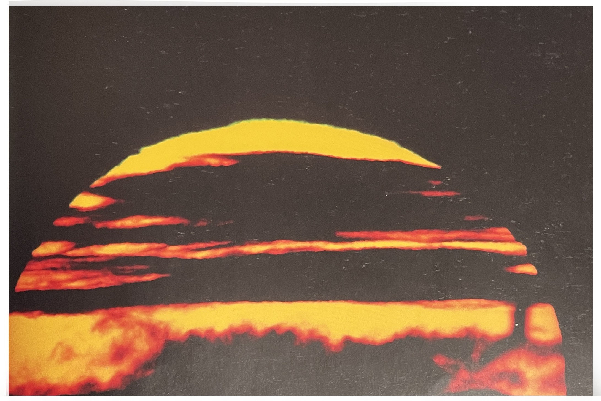태양
나는 이것을 경고로 받아들여야만 했다.
형편없는 칠장이[1/p18]나는 태양의 모습 그자체를 찍는 일을 그만뒀다. 그보다는 태양빛이 비추는 곳이나 물건을 찍는 편이 훨씬 더 풍성한 연구를 할 수 있었다. 찍을 수 있는 이미지의 다양성에 한계는 없었다.
이 작품에서 태양이 비추고 있는 것은 내가 반나절 전에 칠한 벽이다. 태양은 내가 아주 형편없는 칠장이란 사실을 명백히 드러내 보였다. 이른 아침 태양 빛은 벽을 쓸어내려 벽의 질감을 드러냈고 그 위에 일출의 색을 입혔다.
이 모든 것들이 담긴 저 벽이 지난 오후에는 고르게 칠해진 것처럼. 심지어 새파랗게 보였다니. 빛은 비추고 비춘것을 드러낸다. 나는 사진작가가 되길 참 잘한 것같다.
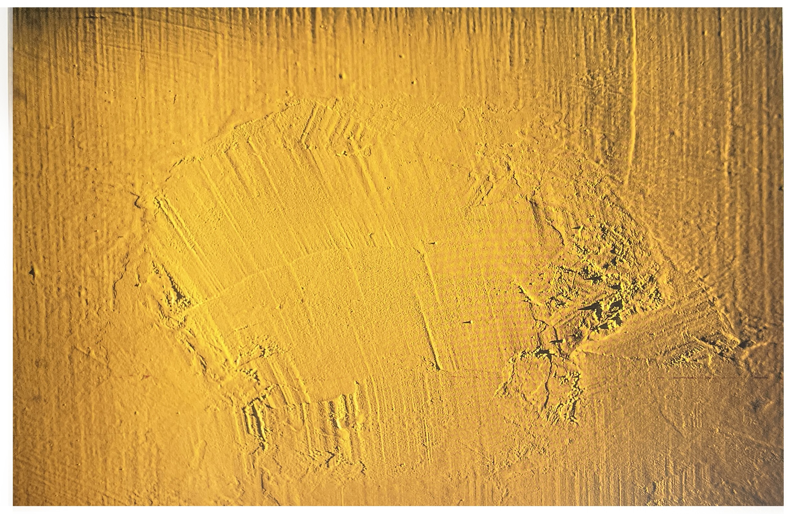페인트 칠한 벽
즐거움[1]나는 자연을 찍는 데 대부분의 시간을 할애했다. 그때쯤 나는 자연을 찍은 사진작가로 불렸다. 물론 더 젊었을 때 나는 '춤울 찍은 사내'로 불렸고, 그 후에는 재즈 사진 작가로 불렸다. 내 작품의 관점을 살펴보면 나는 대부분의 사진을 길 위에서 건졌다는 것을 알 수 있다. 하나의 대상에 충분한 시간을 들여 찍었다고 생각되면 곧 바로 다른 주제나 대상을 원했다.
당신이 무엇을 찍느냐는 별 문제가 되지 않는다. 정말 중요한 질문은 "이것이 당신의 즐거움을 주느냐"다.
내가 이 숲에 쏟아지는 빛의 사진을 찍는 순간 무언가가 반작였고, 그 외의 것들은 검은 윤곽을 드러냈다. 그리고 그때 나의 심장이 빨리 뛰기 시작했다.
한 번은 그 숲에서 자란 가이드와 함께 숲을 촬영하러 갔다. 사진을 '망치는' 작은 요소들이 나타날 때마다 불평을 늘어놓던 내게 그는 말했다. "친구, 여기는 숲이야, 정원이 아니라고." 만약 사진 찍는 일 자체가 즐겁고 당신의 마음을 사로 잡는다면, 사진이 완벽하지 않다고 걱정할 필요는 없을 것이다.
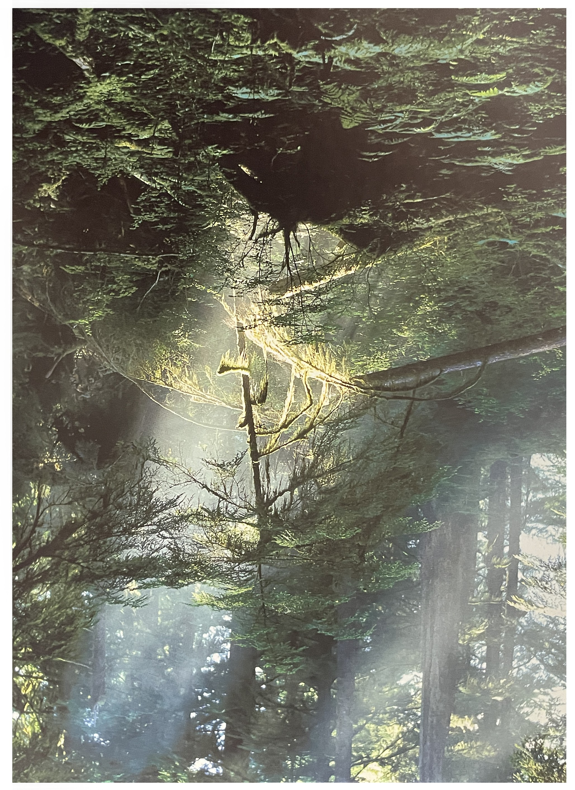쏟아지는 빛
뒤집어진 그림자[1]바하 캘리포니아 사막에서 야생에 관한 작업을 한 적이 있는데 그 중 하루는 야영을 하지 않고 폐허가 된 낡은 건물에서 잠을 잤다. 사막에서 자고 깨는 일이 반복되다 보면 나를 둘러 싼 온 우주의 광활함에 저절로 익숙해진다.
그날 밤 나는 바닥에 비친 '뒤집어진 그림자'를 봤다. 나는 침낭속에서 반쯤 잠든 상태로 "엄마! 5분만 더잘게, 응?"하고 외치고 싶었으나 오히려 조금씩 조금씩 잠에서 깨어나고 있었다. 물론 아주 맑은 정신은 아니었지만 뒤집어진 그림자를 본 순간, 혼란스럽고 졸음으로 가득찬 정신에도 이건 마치 그림자가 생기는 정반대 빛의 조건처럼 여겨졌다.
벽틈으로 들어오는 그 빛을 보니 잠이 확 달아났다. 그게 무엇인지 또 얼마나 오랫동안 이곳에서 머물를지 알아내기 위해 노력하면서 침낭 가까이에 두었던 카메라를 손으로 더듬 더듬 찾았다. 그 빛은 경이로웠고 동시에 긍정의 힘처럼 느꺼졌다. 나는 이 사진을 한 장 찍은 뒤 다시 잠 들었다.
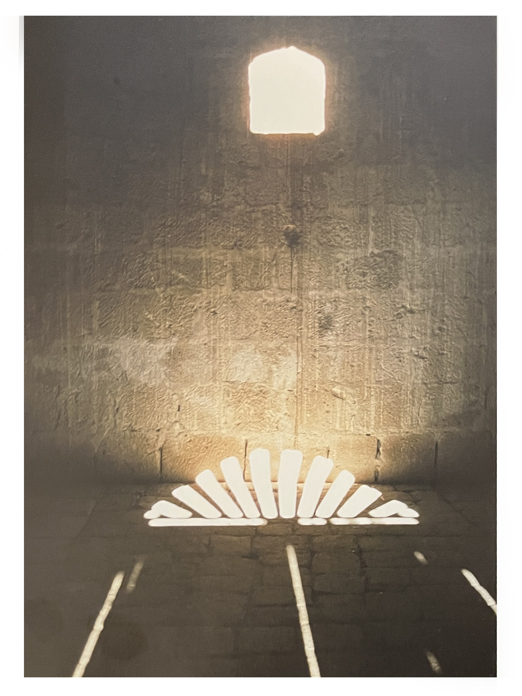오래된 폐허
멈추지 말고 움직여라[1]동이 틀 무렵, 헬리콥터를 타고 메인 주의 하늘을 날아가다 이 광경을 본 나는 흥분을 넘어 황홀경에 빠졌다. 그리고 동시에 반대편에서 바라보는 것은 어떨지 호기심이 일었다. 하지만 문제는 당신이 지금 보고 있는 그것을 찍어야 한다는 것이다. 다음을 기약하지 마라. 그래서 나는 이 사진을 찍은 후에도 반대쪽을 찍기 위해 주위를 계속 맴돌았다. 그리고 다시 이 방향으로 돌아와 사진을 찍으려고 했더니 좀 전의 그 멋진 빛은 이미 사라지고 없었다.
그래도 반대쪽을 볼 수 있었던 것은 참 다행이었다. 마치 사진작가로서의 의무를 다한 것 같았다. 하지만 다시 돌아왔을 때는 당신이 전에 봤던 그 장면은 없다. 그러니 항상 지금 보고 있는것을 찍도록 하자.
당신은 결코 보통의 연극 무대를 바라보고 있는 관객처럼 굴어서는 안된다. 모든 방향에서 볼 수 있는 원형극장에 있다고 여겨야 한다.

메인의 나무
맥락[1]조명이 침침한 갤러리 안에서 시간을 보내고 밖으로 걸어 나오다가 우연히 이 굉장한 장면을 보게 되었다. 우리가 경험하는 것들은 항상 대비와 맥락의 문제에 기인한다. 그리고 우리가 지금 바라보고 있는 것뿐만아니라 우리를 열광하게 만드는 맥락 속에서만 이를 경험할 수 있다.
때때로 우리를 감동시키는 모든 것의 결여는 우리가 마지막에 보게 되는 아름다운 결말의 감동을 극대화시킨다. 우리는 이러한 정체기들의 끝없는 무無가 우리에게 무엇을 준비하게 하고, 또 이런 '발견의 순간'에 감사하게 만드는지 이해하지 못한다. 어떤 면에서 보면 이것은 당신이 멍하게 있을때 땡땡땡!하고 경종을 울리는 것과 같다.

산타페의 적과 흑
신선한 것[1]지금 나는 빛을 향해 달리지만 태양을 정면으로 맞닥뜨리지 않고, 다만 그의 동태를 살핀다. 전봇대는 역광을 받아 검게 보이지만 전깃줄은 신비롭게도 빛을 받아 환하게 반짝였다.
누군가 내개 묻는다. "조명을 어떻게 한 거죠?"
나는 그렇게 대단하지 못하다.
빛이 한 일일 뿐.

전깃줄
당신의 열정을 자극하는 일이라면 계속하라[1]앞의 사진에서 전깃줄이 잘 표현되었다.
그렇다면 "더 많은 전깃줄은 어떤 모습일까" 하는 호기심이 생겼다. 그래서 나는 이 작업을 수년간 계속해왔다.
그러나 이건 계획된 '일'이 아나었다. 나는 그저 무언가 내 열정을 자극할 때는 다시 처음으로 돌아가 더 나은 결과물을 생각하며 다시, 또 다시 시도할 뿐이다. 그렇게 앞페이지에서 이번 페이지로 한 장을 넘기는데 못해도 50년의 세월을 보내야 했다.

전깃줄2
정오의 나쁜 빛 1 [1]많은 이들이 '나쁜 빛'에서는 사진을 찍지 않겠다고 말한다. 나는 식당에 앉아 점심을 먹고 있었다. 밖을 내다보니 이런 모습이 눈에 들어왔고, 처음에는 이것이 무엇인지 바로 알아채지 못했다. 가까이 갔을 때 나는 얼굴에 미소를 지울 수가 없었다. 그것은 아주 뜻밖의 순간이었다. 빛이 바뀌기 전까지 단 몇 분의 시간만이 주어진다는 것을 알기에 재빠르게 작업했다. 사진을 찍은 뒤 다시 친구가 있는 테이블로 돌아와 좀 전에 찍은 것들, 즉 정오의 나쁜 빛이 선사한 이 선물을 보여주고 싶다고 했다.
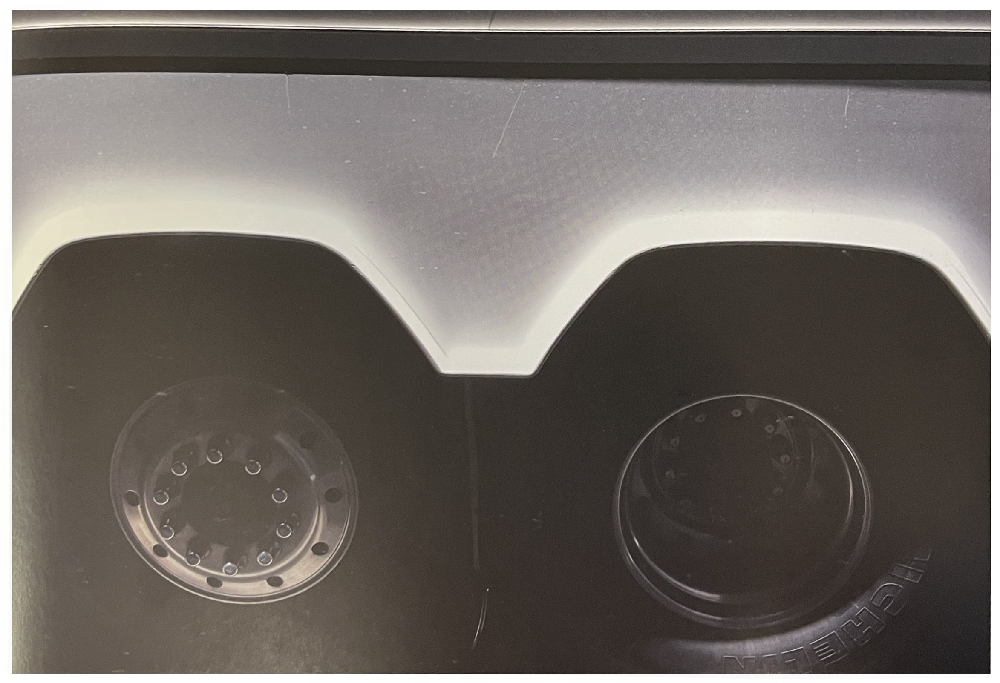버스 바퀴
정오의 나쁜 빛 2 [1]이것 역시 정오의 나쁜 빛에서 찍은 사진이다. 나는 핸드볼 코트 벽에 있는 중간중간 끊어지고 깊게 파인 선과 둥근 홈들이 조금 다른 빛에서 보면 각기 다른 수준과 층, 질감으로 평소와는 확연히 다르게 보인다는 사실에 매우 놀랐다. 하루 중 언제의 빛인지, 어디에서 오는지, 그리고 무엇보다도 빛이 무엇을 비추고 있는지도 중요하다. 복도에는 떠오르는 태양의 옆면으로 새어 나온 빛이 모여들고 있었고, 핸드볼코트에는 가장 높은 고도의 태양 빛이 아래로 떨어지고 있었다. 이두 경우를 굳이 말하자면, 모두 무언가를 드러내 보이는 빛이다.
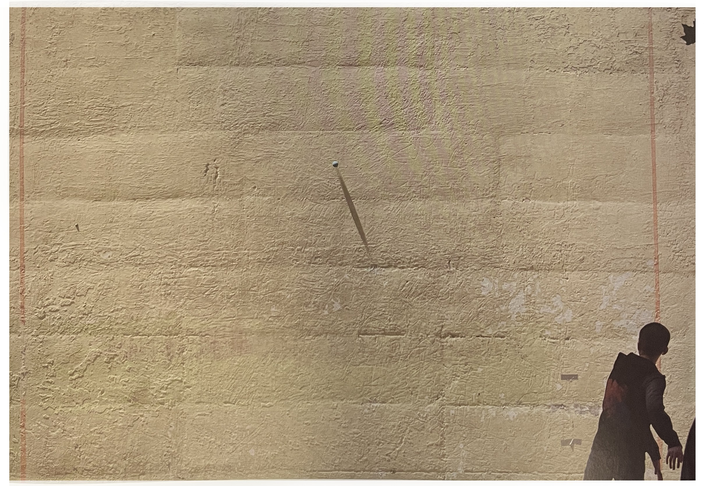핸드볼
정오의 나쁜 빛 3 [1]이번 경우는 시간과 시점의 선택에 있어 이렇다 할 특별함이 없었다. 그저 차를 타고 근처를 지나가다가 이 장면을 봤고, 거기에 이끌렸을 뿐이다. 모든 문제를 한 번에 해결하는 단 하나의 해결책이란 없다. 다만 해결책으로 가는 길을 내재한 문제만 존재한다. 이 사진을 찍기 위해 내가 들인 수고는 미미한 것이다. 눈앞에 이 장면이, 그것은 흔히 '나쁜 빛'이라고 일컫는 정오 시간에 펼쳐져 있었을 뿐이다.
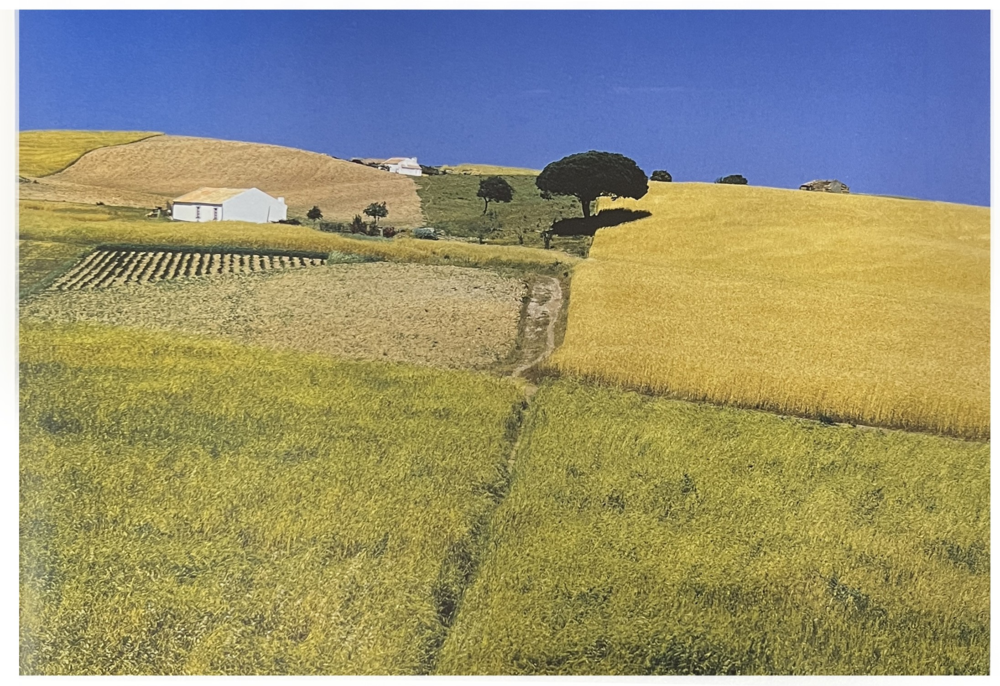포르투칼
정오의 나쁜 빛 4 [1]사람도없고, 색도 없는 어두운 사진이다. 그 절제되고 축약된 모습은 한없이 매력적이었다. 모든 것이 절묘했고, 풍광 역시 인위적인이기보다 꾸밈없이 스며 있었다. 이것은 보드워크 틈으로 떨어지는 빛의 부늬를 찍은 것이다.
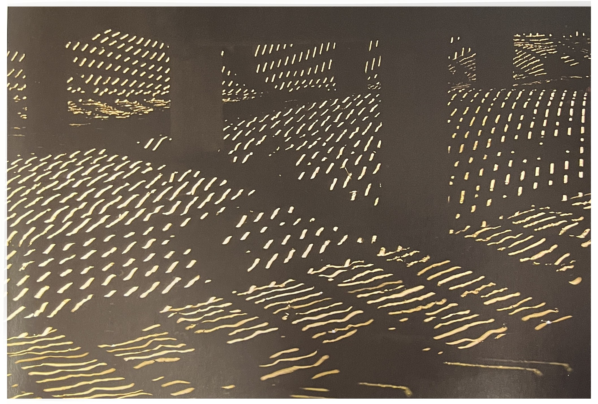머메이드 퍼레이드
정오의 나쁜 빛 5 [1]낮에 무언가 찾기 위해 집에 들렀다가 정오의 '나쁜 빛'을 마주할 수 있었다. 둘쑥날쑥한 빛이 이따금씩 빗살무늬 틈 사이로 들어오자 빛과 그림자 모두 그 모습을 여실히 드러냈다.
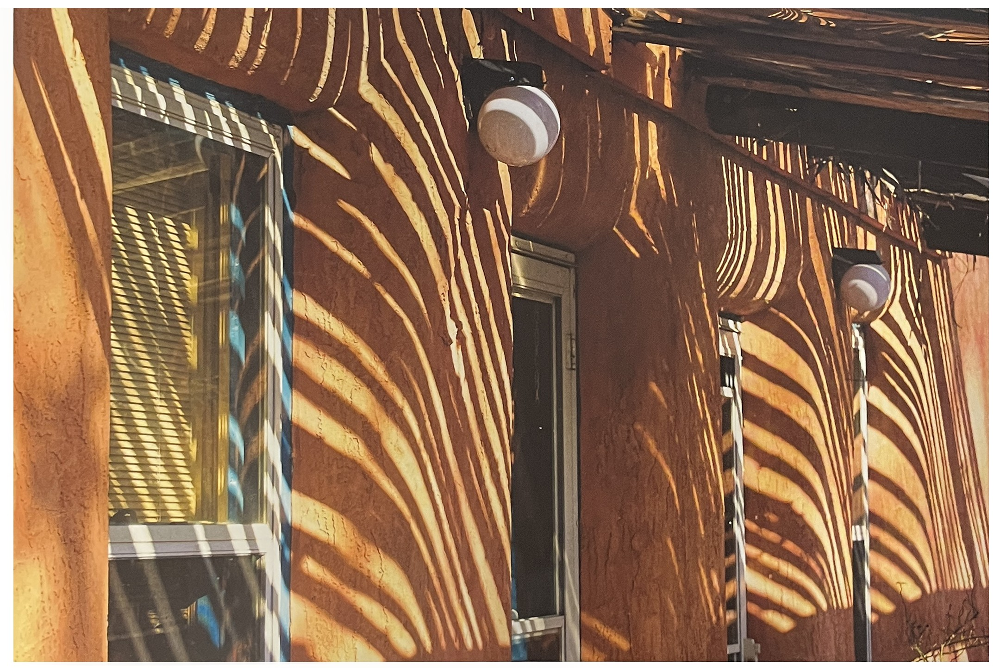어도비 하우스 센타페이
갑작스러운 빛[1]이 사진 속 장소의 동절기 오후 네다섯 시의 빛은 바로 앞 사진의 정오와 비슷하다는 것을 미리 밝혀두고 싶다. 언제 찍느냐, 무엇을 찍느냐, 어디에서 찍느냐 중 어느 한 가지만 고려할 것이 아니라 이 셋의 조화를 생각해야 한다. 이 빛은 일 년을 통해 겨우 며칠멍 얻을 수 았다. 빛이 어떻개 이 많은 빌딩을 뚫고 끝끝내 길을 가는 사람들에게 안착 할 수 있었는지는 의문이다. 엎친 데 겹친 격으로 뉴요커는 대체로 검은 옷을 입는 편이다. 그러니 관광객이 자나갈때까지 기다르리는 수 밖에!
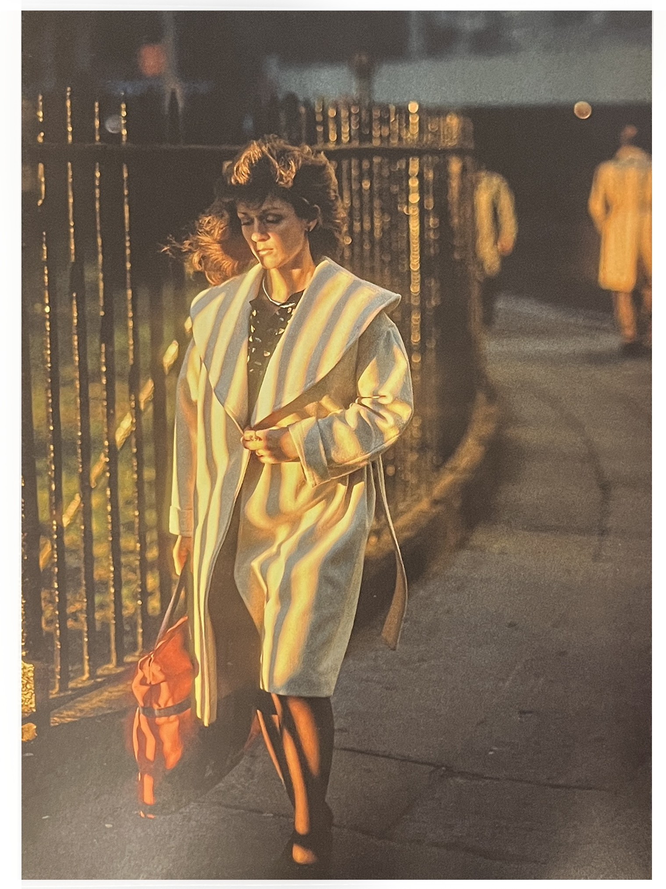흰 옷을 입은 여인
없을수록 넘치는[1]사진에 빛이 많을수록 드라마는 적어진다. 다시말해 섬세한 부분이 중심이 되면 신비로움과는 이별이라는 것이다. 절제된 빛은 사진을 대부분 어둡게 남겨둠으로서 이야기를 만들어 낸다. 그렉 하이슬러Greg Heisler와 필 마르코Phil Marco는 내가 오랫전부터 존경해온 인물이다. 그렉은 언젠가 왜 사람들이 밝고 하얀 스튜디오에 열광하는지 이해할 수 없다고 말한 적이 있다. 그는 어떤 환경에서도 및을 찾아 고군분투해야 한다고 여긴다. 심지어 그는 촬영 중에 불을 끄라고 하는 편인데, 그래야 보다 쉽게 그가 원하는 방향으로 빛을 조절할 수 있기 때문이다. 또한 필은 빛을 찾아 헤맬 필요 없이 그가 원하는 대로 빛을 사용할 수 있는 검은 스튜디오를 가지고 있다. 명심하자, 이 모든 건 넘치는 빛이 아니라 오로지 당신이 비추고 싶은 그것만을 비추는 그 빛을 말하는 것이다.
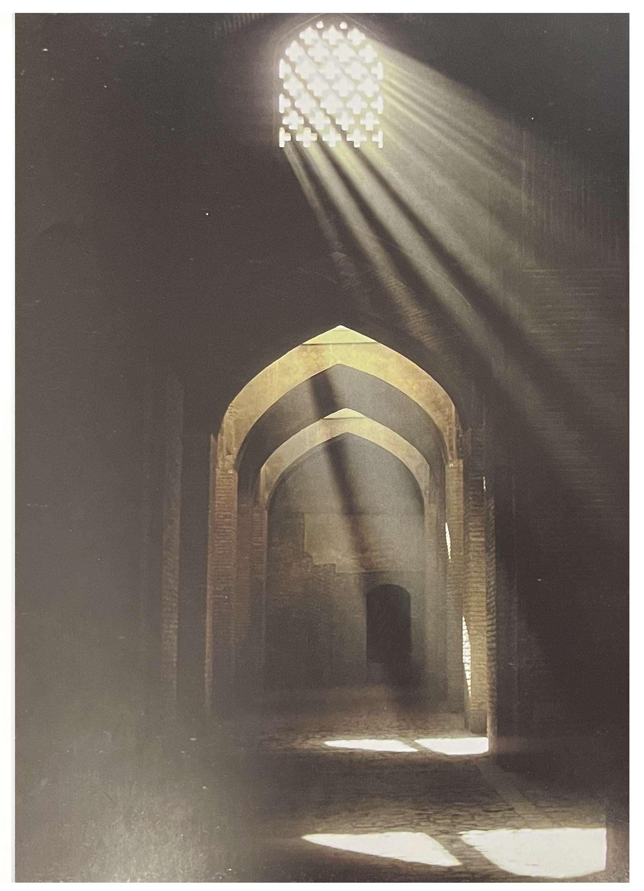모스크의 빛줄기
다시 돌아가도록[1]가끔은 실제로 사진을 찍지 않아도 머릿속에서 사진이 움튼다. 대로는 같은 것을 반복 촬영함으로써 사진이 발전하고 성숙해지기도 한다. 나는 이 벽면을 정말 많이 촬영했다. 그리고 그때마다 다른 부분이 보이지 않도록 벽의 사각형 타일만 화각에 담았다. 얼마 뒤 또다시 돌아서서 난간이 비친 모습도 함께 촬영했다. 그러고는 또다시 돌아가서 이번엔 실제 난간과 난간이 비친 모습을 전부 사진에 담았다. 마침내 나는 화각에 피사체를 넣는 방법을 터득했다. 나는 이 사진을 좋아한다. 하지만 나는 앞으로도 분명히 계속해서 이 사진을 가지고 씨름할 것이다.
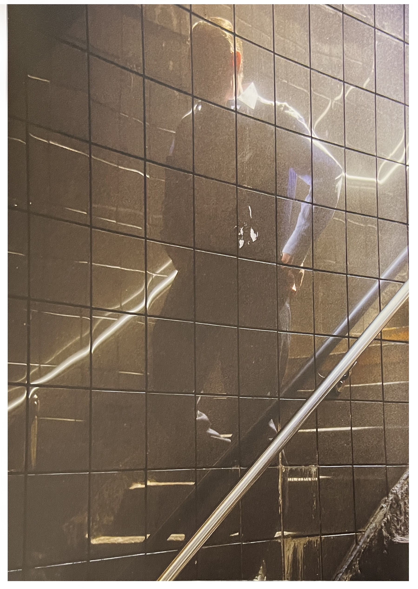지하철 계단
거닐다[1]우리는 가끔 길을 걸으며 영감이 떠오르길 기다리거나, 무언가 나를 잡아 끌어주지 않을까 하는 생각에 위를 올려다보거나 이번 경우처럼 아래를 내려다 보기도 한다. 그러다 보면 때로 신선한 발견을 하게 된다. 또한 항상 눈높이에서, 눈높이에 맞춰 사진을 찍어야한다는 생각도 버리자. '어디에서 찍을까'는 매우 중요하게 고려해야 할 사항이며, 사진을 찍는 가장 쉬운 방법 중 하나에도 빠질 수 없는 요소다. 모든 가능성을 열어두라. 높게, 낮게, 빛을 잔뜩 받으면서, 또는 빛에 반해서, 그리고 모든 가능성을 다 점검하기 전에 너무 쉽게 인정하고 단념하는 태도는 버리도록 하자.
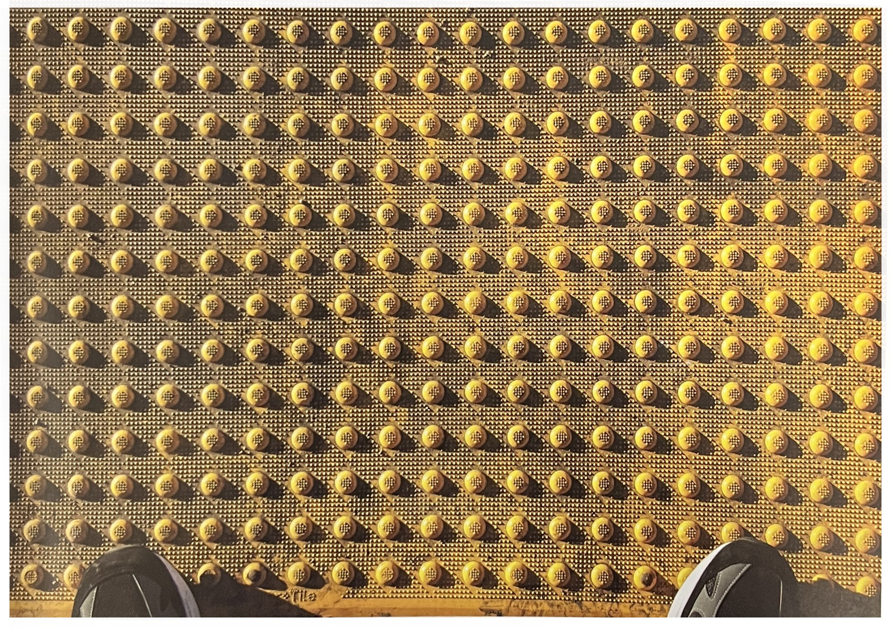노란색과 발
나는 100장의 사진 중 99장을 버린다[1]자신을 다른 이와 비교하지 않은 것은 매우 중요한 일이다. 당신보다 노련한 누군가애 비해 당신은 그렇지 못할 것이고, 처음 카메라를 잡은 사람과 비교하면 당신의 어깨가 으쓱해질 수도 있다. 그러나 이런 건 다 쓰잘데기 없는 소리다. 당신이 비교해야 할 대상은 오직 당신 자신이다.
이때는 아름다운 순간이다. 그리고 이처럼 멋진 순간을 찍으면서, 분명히 말해두지만 나는 정말 사진을 잘 찍는 사람인데도 100장의 사진 중 99장은 버린다. 나는 이 업계에 60년 이상을 몸담고 있으면서 하루도 빠지지 않고 사진을 찍어 왔다. 내 렌즈는 캡을 씌울 필요가 없을 정도이며 그 어떤 것도 나의 작업을 멈출 수는 없다. 그러나 나는 여전히 100장을 찍어 단 한 장의 사진을 건진다. 스스로 책망하지 말고, 자신에게 화를 내지도 말자. 당신 역시 나처럼 대부분의 멋진 사진들을 놓칠테니까. 본 것만으로도 의미가 있다. 그것도 힘들긴 마찬가지다. 그리고 명심하자. 대부분의 사람들은 당신이 놓친 것을 보지 못하고 심지어 잘 보지도 않는다. 그러므로 당신은 이미 한참을 앞서 가고 있는 것이다.
실패를 나쁜 의미로 해석해서는 안된다. 영화감독인 우디 앨런은 당신이 만약 실패한 적이 없다면 그건 진짜 최선을 다하지 않은 것이라고 했다. 극작가 사무엘Samuel Beckett 역시 "시도했는가? 그런데 실패했는가? 개의치 마라. 다시 시도하라. 그리고 다시 실패하라. 단 더 나은 실패를 하라"고 말했다. 그리고 팝아트의 거장 재스퍼 존스Jasper Johns 또한 마친가지로 실패를 성공을 향해 가는 긍정적인 단계라고 여겼다.
따라서 우리는 모두 굉장한 사진들 대부분을 놓치고 있지만 체념하거나 절망하지 말고 계속 찍어야 한다. 당신은 혼자가 아니라는 사실을 명심하라 "우리는 사진을 찍음으로써 카메라 없이도 더 잘 보는 법을 배운다"라고 에른스트 하스는 말했다.
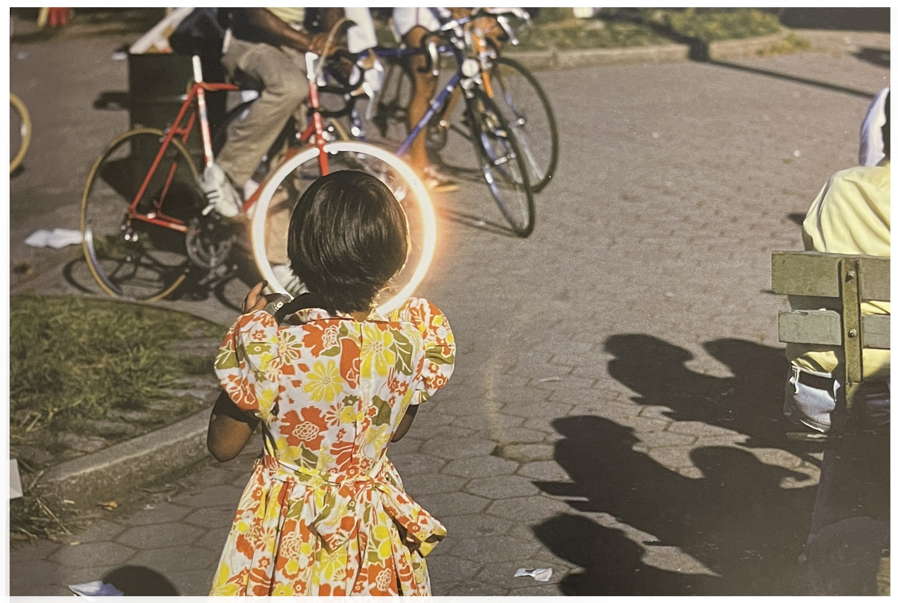광륜을 쓴 소녀
북광北光[1]레오나르도 다빈치는 우리가 진정한 색을 볼 수 있는 시간은 오직 새벽부터 해가 뜨기 전까지 또는 해가 지기 시작할 때부터 땅거미가 지기 전까지라고 말했다. 또한 그는 태양이 하늘을 가로지를 때 색은 그 영향을 받아 변화한다고 주장했다. 만약 당신이 모네가 그날 하루 종일 건초더미를 그린 그림을 본다면 그가 그림 안에 시간이 지남에 따라 사물의 색이 바뀐다는 사실을 그려 넣었다는 점을 알 수 있을 것이다. 자전거에 반사된 광륜光輪을 쓴 소녀의 사진에서 우리는 즉각적이고 순간적인 빛을 볼 수 있다. 반면 화가들은 변화가 없는 북광에서 작업하는 것을 좋아한다.
한 사진 작가는 내게 북광은 오래 볼수록 더 좋다고 이야기했다. 나중에 깨달은 것이지만 그는 내게 북광을 깊이 이해하는 능력에 대해 설명하려고 했던 것이다. 말하자면 변치 않는 색과 빛을 바라보며 시간을 보내는 능력 말이다.
파리에 있을 때 나는 친구의 호텔 방에 갔다. 화장실이 급했다. 화장실에 들어서자 그곳에 빛이 있었다. 그 빛은 고혹적이었고, 북광이었다.
사실 나는 이 업계에서 처음 일을 시작했을 무렵 몇 년 동안 창문을 통해 들어오는 빛을 이용해서 모든 인물사진을 찍었다. 그것 역시 북광이엇을 것이다. 그 당시 나는 인공조명 사용법을 몰랐다.
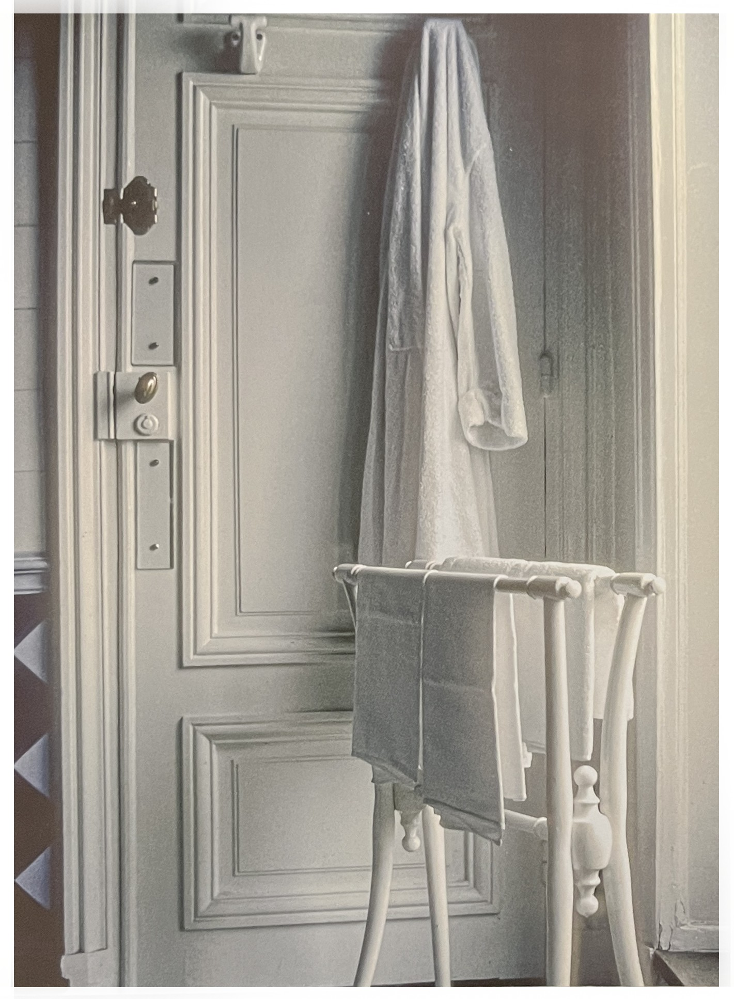파리의 욕실
제스처가 늘 액션을 뜻하지 않는다[1]제스처가 오직 사람에게만 국한된 것이 아니라는 것을 처음 이해하기 시작했을 때도 나는 여전히 사람들의 제스처를 찍는게 좋았다. 사람들이 제스처를 떠올릴 때 "액션!"이라는 단어와 함께 느낌표를 연상한다는 생각이 문득 들었다. 제스처는 누구에게나, 꼼짝하지 않고 가만히 멈춰 있는 사람이나 자세를 고쳐 잡는 사람, 심지어 잠든 사람에게도 찾아볼 수 있다는 사실을 안다는 것은 매우 중요하다.
제스처는 액션과 아무 연관이 없는 다른 분야에서도 보여줄 수 있다. 체념, 슬픔, 생각, 성찰, 기쁨, 수용, 그리고 더 많은 것으로도 보여줄 수 있다는 말이다.
나는 내딸이 잠든 모습을 찍는 것을 매우 좋아한다. 잠든 사람에게는 딱딱하게 굳은 표정은 찾아보기 어렵다. 딸아이는 천사같고 평온해 보인다. 그리고 그것이 내가 얻고자 하는 모습이다. 다만 딸아이가 잠에서 깨어나 나를 향해 고함을 지르며 "자고 일어났는데 사진 찍힌거 알면 얼마나 기분이 나쁜지 알기나 알아?"라고 하더라도 너무 마음쓰지 말아야 한다.
"응, 그래 착하지, 우리 딸, 진정하고 어서 가서 다시 자는 게 어때?"
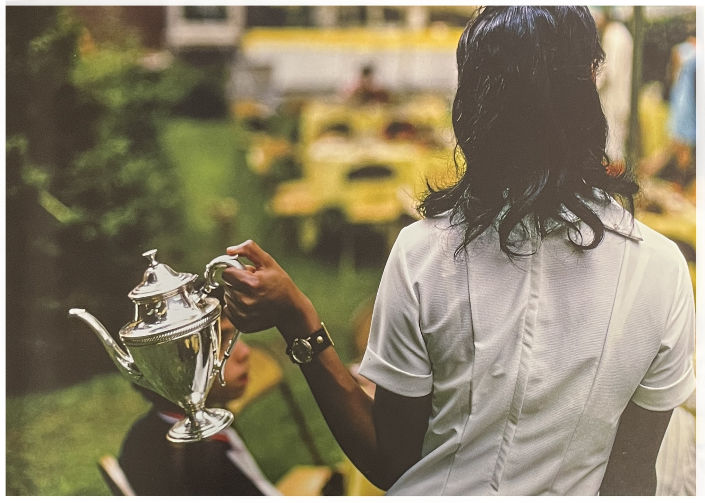찻주전자를 든 여인
디테일[1]'신은 디테일 속에 존재한다.'는 말을 들어존 적은 있지만 그 사실에 대단한 확신은 없다. 그러나 제스처가 디테일 속에 존재한다는 것에는 확신이 있다. 가끔은 당신도 디테일을 감상하거나 시험하며 시간을 보낸다. 그리고 당신이 이런 것들을 촬영할 때에는 당연히 영광스러운 그들의 모습을 우리에게 보여주어야 한다.
모자의 끈을 턱에 맨 남자 사진에서는 어두운 피부색과 화려하고 복잡한 디자인의 턱끈이 대조를 이루고 있다. 디테일에 관한 또 한 가지는 이제 그 사물의 모든 가능성을 최대한 끌어올리도록 렌더링할 수 있는지를 봐야 한다. 그리고 당신에게는 충분히 더 잘할 수 있는 시간이 있다는 걸 기억하라.
여기서 렌더링Rendering이란 건축적 렌더링architectual rendering, 즉 예술가가 건축물 또는 존재하지 않는 어떤 것을 그려낼 때 마치 존재하듯이 표현하는 것에서 그 의미를 가져올 수 있다.
가능한한 가장 정확하게 기록해야 사진 속에서 당신이 보고 느낀 것을 잘 보여줄 수 있다. 렌더링이 잘 될수록 나는 당신이 느낀 것과 더 비슷한 느낌을 가질 수 있다.
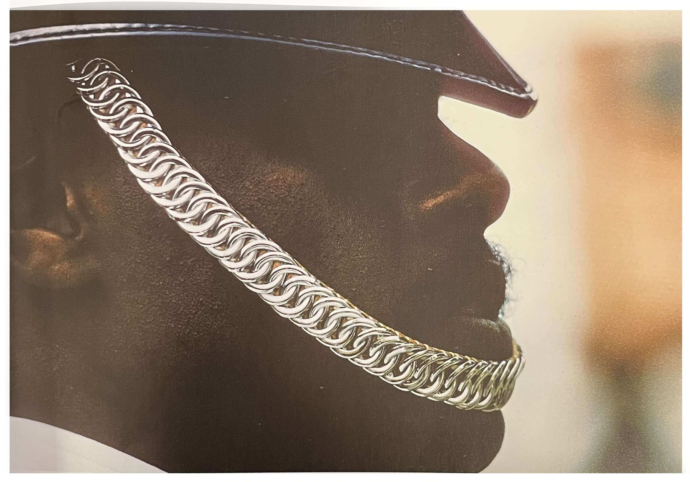턱끈을 한 남자, 자메이카
사용과 남용[1]나는 종종 나의 작품에서 과거나 미래를 보려주려고 노력하지만 성공적인 경우는 매우 드물다. 나에게 있어 사진을 찍는 것은 단지 눈앞에 있는 것을 찍는 것뿐 아니라, 지금은 이미 지나가 버린 시간의 역사가 당신의 지금 보고 있는 것에 어떤 영향을 미쳤는지까지도 함께 찍는 것이다.
이 말이 예술하는 사람의 허세처럼 들린다면, 그냥 지금 사진 속에는 없지만 지금 있는 것들에 영향을 미쳤던 것의 사진이라고 생각하라. 과거의 영향력을 현재에 보여주는 하나의 방식은 사용과 남용이다.
그러니까 사용과 남용, 그게 뭐란 말인가? 그것은 시간이 흐르면서 드러나는 관리 또는 관리 소홀이 어떤 것의 겉모습을 그대로 잘 유지하는 데 중요한 역할을 하는지 보여주는 방증이다.
제스처는 시간이 지남에 따라 표면과 질감, 색을 철저히 다른 것으로 바꿔 놓을 수 있다. 그러므로 우리는 그 시각적인 효과에 대해 인식하고 있어야 한다. 바람에 꺽인 나무나 알베르토 자코메티Alberto Gacometti의 작품 같은 철도를 잇는 큰 못, 갓난아이부터 노인에 이르는 사람의 얼굴, 물에 침식된 돌들과 빛바랜 색들 그리고 손때가 묻어 낡은 손잡이를 생각해보자.
시간이 경과한다는 것은 필연적이며 냉혹한 것이다. 때에 따라 점잖게 느껴지기도, 가혹하게 느껴지기도 한다. 우리는 이를 무시해서는 안 된다. 이것은 우리가 반드시 지각해야 하는 시각적 흐름의 일부다.
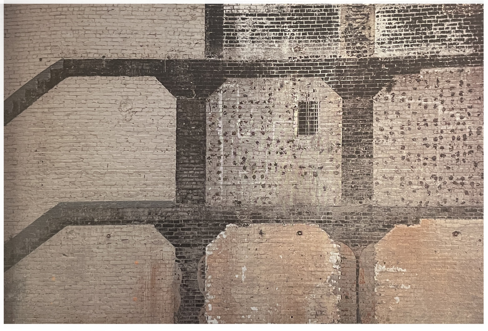시애틀의 잔유물
전혀 새로운 세게[1]제스처를 연구하면서, 얼마나 가까이서 작업하는지가 얼마나 큰 차이를 만드는지 알았을 것이다. 이 사진은 1미터도 안된되는 거리에서 작업했다. 점점 더 가까워지면 가까워질수록 더 많은 것이 드러난다. 수 미터 밖에서는 보이지 않던 것이 가까이에서는 전혀 다른 모습으로 보일 수도 있고, 이 사진의 경우에는 보이는 것처럼 팽팽하게 확장한 물의 형태가 드러나 있다.
만약 내가 더 가까이 다가간다면, 물이 아니라 물에 비친 반영을 보게 될 것이다. 사진에 담는 모든 것이 제스처를 갖는다는 사실, 또 그 피사체가 자유로운 변주를 가진다는 사실을 점점 더 또렷하게 인지하길 바란다. 각각의 요소가 지난 수많은 측면에서 바라보게 되면, 당신은 결코 그것들을 그냥 물, 눈,또는 나무라고 말할 수 없을 것이다. 또한 각각의 피사체를 가능한 다양한 방법으로 표현해 낼 수 있다는 것에 감사하게 될것이다.
크기를 인지하고 있어야 한다. 당신이 촬영하고자 하는 그 대상이 사진 안에서 얼마나 작은지, 또는 얼마나 큰지 말이다. 이것은 어마어마한 영향력을 가지기 때문이다.
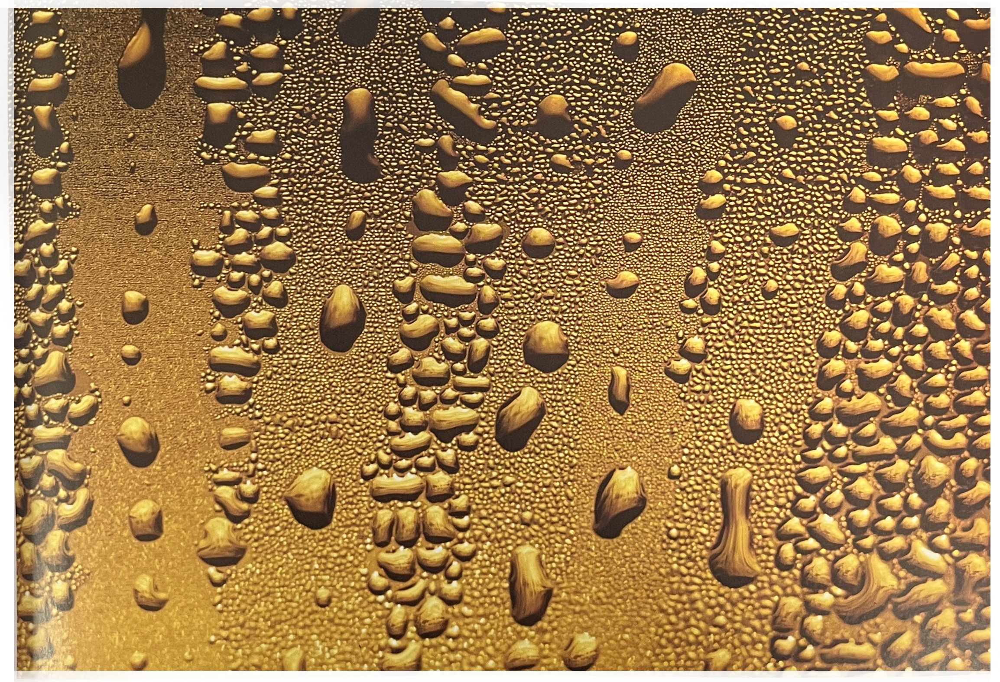크로즈업
랜즈를 이용한 압축 활용[1]이 맨해턴 브리지의 제스처를 보자. 나는 1000mm 망원렌즈로 저 작은 요소들을 압축시켜 다리의 거대한 케이블 구조를 강조하고 싶었다. 시점을 선택할 때나 말하고자 하는 제스처의 핵심을 더 섬세하게 보여주고자 할 때 렌즈의 압축을 이용하는 것이 얼마나 필요하고 또 유용한지 당신도 곧 알게 될 것이다.
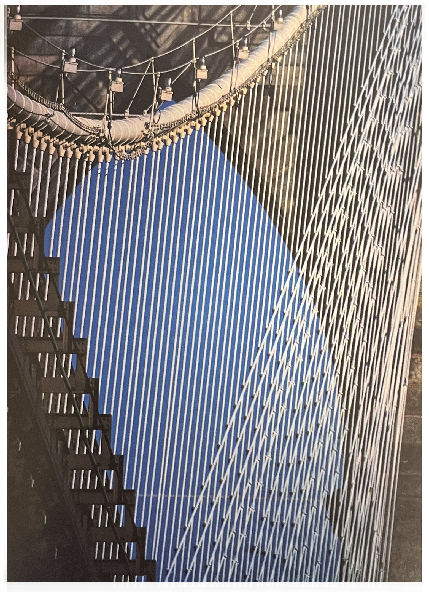맨해튼 블리지
공간을 열어두자[1]금문교의 제스쳐는 광각렌즈를 사용함으로써 그 드라마적 요소가 부각되고 길게 늘어진 케이블의 모습이 강조되었다. 이럴 때 1000mm 렌즈는 그다지 좋은 선택이 아닐 것이다.
세상에는 정답이 하나만 존재하는 것은 아니다. 그러니 부각시키고자 하는 요소에 맞는 적재적소의 장비를 고를 수 있어야 한다. 문제는 반드시 해결책을 제시하기 마련이다.

금문교
끝없이 찍을 것[1]이 사진과 같은 장소와 구도의 사진을 2, 3년 동안 찍어왔다. 매번 똑같은 장면을 찍기 위해서 나는 누군가의 현관 앞 계단에 올러서야만 했다. 나는 늘 문이 열리거나 누군가 나를 밀어버려서 바닥으로 떨어지지 않을까 하는 두려움을 가지고 있었다. 그렇지만 이 사진 속의 계절에 따라, 하루 중 어느 때인지에 따라, 날씨에 따라 혹은 무언가를 더하거나 빼는 것에 따라 변하는 보습을 보면서 세월이 축적되면 그 가치가 더 커질 것이라 여겨졌다.
각각의 사진은 구조적으로 서로 동일하다. 그러나 각기 서로 다른 자기만의 제스처와 디테일을 지닌다. 이 사진의 가운데 위쪽에는 누가 묶어 놓은 것인지 아니면 나무에 우연히 걸린거던지 모를 풍선 끈이 보인다. 그리고 사진의 왼쪽에서는 새싹이 움트는 봄의 모습을 볼 수 있고, 오른쪽에서는 가을의 마지막 붉은 단풍을 볼 수 있다.

스프링가의 공원
공간의 제스처[1]당신은 가끔 일을 하면서 당신의 의식보다 훨씬 더 아래에 있는 인식과 동기에 관한 것들을 익히고 있는 자신을 발견하게 된다. 아주 드물게 운이 좋을 때는 조금이나마 당신이 무엇을 하는지 알 수도 있겠지만, 대개 공적인 일과 사적인 동기 사잉의 연결고리를 찾기란 쉽지 않다. "나는 늘 내가 무엇을 하고 있는지 인식하려고 노력하지만 가끔, 그것도 아주 지독한 행운이 따를 때나 그걸 알아챌 수가 있습니다"라고 샘 아벨ㅇSam Abell은 말했다.
지하철 안에서 사진을 찍었을 때, 나는 그가 겪고 있는 걸 보여 주려고 했다. 사람들이 북적대는 틈에서 문이 닫히기 전에 모든 짐을 가지고 내려야 했던 그가 느꼇을지 모를 패쇄공포와 또 한편으로 몽환적이고 초현실적인 요소를 지닌 감정을 보여주고 싶었다. 나는 내가 이 사진 속에 단지 사람들의 제스처 외에도 그 공간이 주는 갑갑한 제스처까지 담고자 했다는 걸 나중에야 깨달았다. 그와 그 친구들 그리고 그의 풍선이 전부 내리고 난 뒤의 사진을 찍어두었더라면 이 사진과 대조를 이뤄 아주 멋있었을텐데, 그때는 미처 생각하지 못했던 것이 여러모로 유감스럽다.

풍선들
공간의 제스처 2[1]이 사진은 앞의 풍선 사진을 찍은 지 정확히 일주일 뒤에 뉴욕의 메트로폴리탄 미술관에서 찍은 것이다. 편짐과정에서 이 두 사진을 나란히 두고보니 두 사진에서 모두 공간으을 설명하는 제스처를 찾을 수 있었다. 당신에게서 너무 뻔해 보일지 모르겠지만 나에게는 새로운 발견이었다. 제스처나 사람이나 무생물울 정의하는 것뿐 아니라 공간 그 자체의 느낌을 전달할 수도 있다는 사실 말이다. 물론 갇혀 있는 지하철의 수많은 잍파 장면에서의 느낌, 그리고 미술관에 홀로 선 한 여성의 고요, 안정감 그리고 자유가 느껴지는 완벽한 호화스러움에는 전혀 다른 세계가 존재한다.
작은 사각형들에서 풍겨져 나오는 사진의 분위기를 인식하는 것과 유사하다.

메트로폴리탄 미술관
다른 우주[1]오래전에 나는 영광스럽게도 세계적으로 저명한 시네마토그래퍼 빌모스 지그먼트 Vilmos Zigmond를 초대한 적이 있다. 그의 대표작으로는 '디어헌터Deer Hunter, 미지와의 조우Close Encounters of Third Kind등을 꼽을 수 있다. 그에게 내 작품을 보여주던 중 그는 창문에 맺힌 얼음 결정 사진들을 바라보다 입을 열었다. "이거 아주 좋군요." "고맙습니다." "저런 건 언제 찍을 수 있죠?" "주로 동이 트고, 해가 떠서, 저들이 녹아내리기 전까지 찍습니다."
그가 한숨을 쉰뒤 말을 이었다. "나는 오후 3시 또는 언제든 그들이 원할 때에만 촬영할 수가 있습니다." 나는 그가 어떻게 그렇게 하는지 전혀 짐작할 수가 없었다.
그리고 나서 지난주에 그 때의 대화를 떠올렸다. 뉴욕에 찾아온 혹한 때문에 나는 정말 꽁꽁 얼 지경이었다. 하지만 15년 만에 다시 얼음 결정을 찍을 수 있어서 매우 기뻤다. 내가 마지막으로 그걸 찍었을 때 나는 필름 카메라를 쓰고 있었는데, 내가 2000년부터 디지털 카메라를 사용하기 시작했으니까 적어도 그 정도의 시간 이전이라는 것은 확신할 수 있었다.
얼음 결정을 찍을 때마다 그 생김새가 다르다. 그리고 그들은 하나의 창에서 다른 창으로 옮겨가며 모양을 바꾼다. 이들은 각각 빛과 얼음 결정들, 배경, 녹는지 녹지 않는지 그리고 또 다른 많은 가능성에 따라 각기 다른 우주를 이룬다.
여기에 있는 세 장의 사진은 전부 다른 제스처를 가졌고, 하나같이 어려운 데다 전부 순간적이며 그 자체로 이미 굉장한 도전이다. 그런데도 사진이 멋지게 나오면 그 기분은 말로 표현하기 어려울 만큼 짜릿하다.
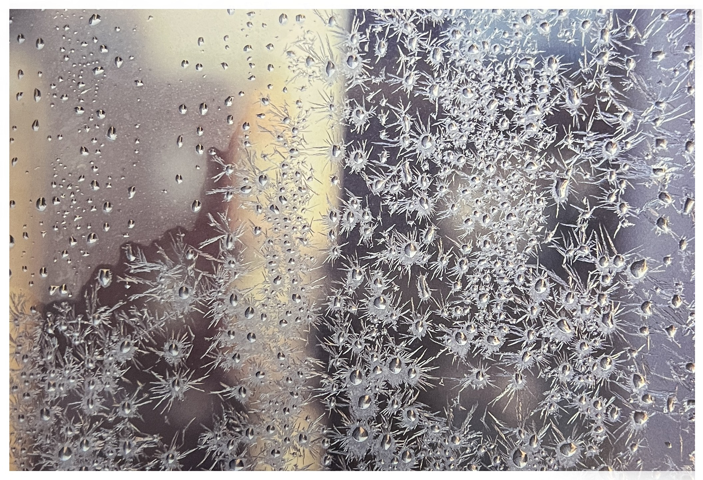얼음 결정 1
무색의 색[1]나는 저지 시의 뉴욕에의 뒤쪽을 찍기 위해 뉴저지에 가 있었다. 이 사진을 보고는 이것이 바로 평소 '무색의 색'이라고 부른는 것이라는걸 깨달았다. 이것은 색이 아주 미묘해서 거의 아무색이 없다고 해도 될 정도다. 마치 굶주린 사람이 빵부스러기에도 입맛을 다시는 것처럼 아주 약간의 색만 남겨져 있다. 늘 짙고 강렬한 빨간색, 노란색, 그리고 파란색이 아니라 조금 더 부드러웅 색의 팔레트도 괜찮다는 것을 깨닫는 일은, 어렵긴 하겠지만 그래서 더 큰 칭찬을 받을 만한 일이다.

세계무역센터
보이게 하라[1]흑백의 성조기 사진을 찍고 바로 뒤에 우연히 워싱턴에 가서 이걸 봤다. 나는 다른 사람의 예술작품울 사진에 담지 않으려고 하는 편이다.' 그러나 이 규칙에는 한 가지 예외 조항이 있고, 또한 이를 정당하게 대변하는 하나의 명언이 있다. 앞으로 곧 사라져 다시 볼 수 없게 될 것은 찍을 수 있다는 것이, 그 단하나의 예외 조항이고, 이를 완성하는 것은 로베르 브레송Robert Bresson의 말이다. "당신이 아니었다면 보이지 않았을 것을 보이게 하라."

궤맨 성조기
마침내...[1]이 사진을 찍기 위해 몇 년을 고생했지만 계속 실패했다. 줄 세우고, 구도를 짜고, 사진을 찍을 때 마다 경호원들이 내게 소리를 질렀고 노출이 부족하거나 초점이 맞지 않기 일쑤였다.
그러나 내게 니콘 D3가 생기고 나서는 경기의 판세가 다라졌다. 언제든 ISO1600으로 촬영이 가능했기 때문이다. 나느 사진을 찍고 유유히 사라졌다.
이것은 기술의 발전이 이전에는 잘 찍을 수 없던 것을 손쉽게 찍을 수 있게 해준 예다. 그렇지만 이건 단지 이전에 열려 있지 않았던 공간에서 사진을 찍을 수 있게 되었다는 말이지, 당신의 사진이 대단해졌다는 걸 뜻하는 것은 아니다. 이 사진이 주는 감동정의 동요는 '색'에서 오는 것이지 '색들'에서 오는게 아니다. 단채색을 쓰면 당신이 사용하는 몇 가지 색에 집중할 수 있게 해줌으로써 그 효과를 낼 수 있다.
최대의 효과를 위해서 최소한의 색을 사용하는 것이 필요하다.

푸른 로비
풀 컬러[1]나는 이란의 이스파한에서 '페르세폴리스의 승리'Celebration Persepolis라는 책의 마을 연작 중 하나에 실릴 사진을 찍고 있었다. 그 책은 키루스 대제의 탄생 2,500년을 기념하는 것이기도 했다. 나는 주어진 많은 것에 대체로 만족하여 살아왔지만, 이것을 본 순간 바지에 실례를 할 뻔했다. 너무 흥분되어 좀 과할 정도로 나 자신을 자제시켜야 했다. 녀석이 날아갈 수도 있으니 서두르지 말 것, 카메라 모터를 쓰지 말 것, 이 사진과 그 뒤의 몇 장의 사진은 지난 몇 년간 내가 모터 없이 촬영한 유일한 것이다. 색의 범위를 날려버리고 다른 모든 것들이 오로지 이 작고 검은 새와 어떻게 연결되었는지에 집중했다. 새가 없는 사진도 나쁘지 않았지만, 새가 있음으로 해서 이사진의 화룡점정을 찍었다.
우리는 용의 눈을 그려 넣기 위해 기다린다. 그것은 퍼즐의 마지막 조각이고, 내가 사진을 찍고자 하는 이유이기도 하다.
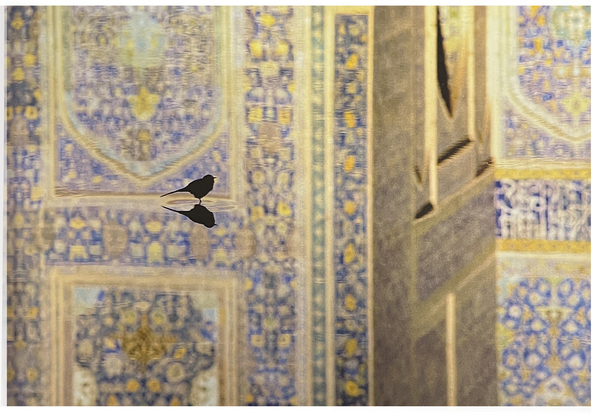이란의 새
색 말고, 색들[1]이것은 흥미롭다. 그러나....
또한 이것은 하나의 색에 관한 것이 아니라 '색들'에 관한 것이다.색으로 넘쳐널 때는 오히려 색을 보기가 힘들다. 나는 색의 명료함과 상스러움을 모두 사랑한다. 그러나 그것이 내가 추구하는 종류의 색이라고는 생각하지 않는다.
색들로 가득 차 있으면 오히려 서로 상호작용을 일으키지 못한다. 색들 사이의 관계나 상호작용은 색을 이미지로 형상화한다. 그리고 이런 일들은 대부분 색의 과잉보다는 그 반대의 경우에서 일어난다.
이런 색들은 전부 "나를 봐! 나를 점 보라고!"하며 앞다퉈 소리칠뿐 서로 조화를 이루지 못한다.
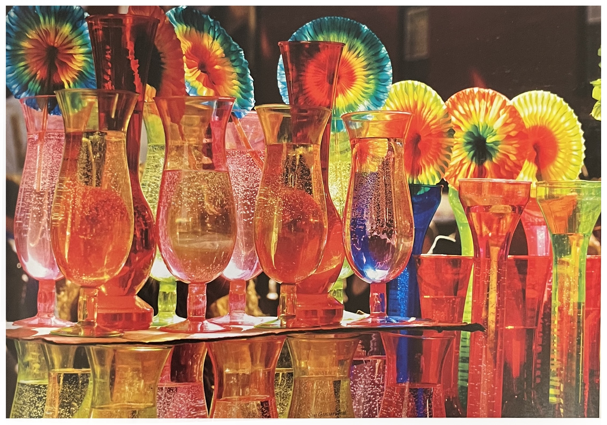유리잔들
색들 말고, 색[1]이것은 색들 말고 색에 관한 것이다.
또한 이것은 내게 흔치 않은 사진이기도 하다. 마치 배경처럼 절정도, 사건도 없는 이상하리만치 아무 감흥이 없는 사진이기 때문이다. 게다가 이것은 무색은 아니지만 제한된 색으로 되어 있다. 그 특징이나 분위기는 나를 감동시키는 동시에 깊은 슬픔을 느끼게 한다.
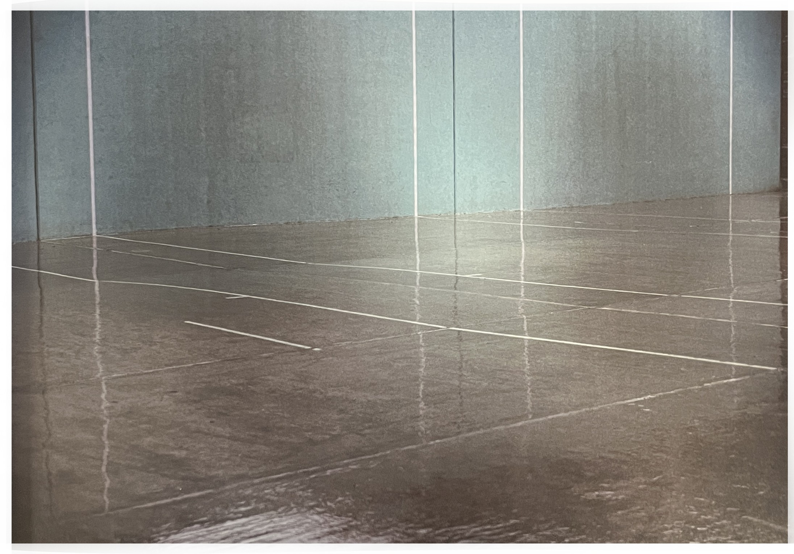젖어 있는 핸드볼 코트
이전의 것은 잊고, 지금 보이는 것을 보자[1]이것은 그냥 컬러 사진이 아니라 색에 관한 사진이다. 앞의 핸드볼 코트 사진 역시 마찬가지로 색에 관한 사지이지만 겨우 주제를 뒤받침하는 정도라고 할 수 있다.
이 사진은 오로지 색에 대한 동경을 담고 있다. 표면상으로는 건물을 닮으응 천막과 격자무늬 판이 있는 것 같지만 사실 그것은 격자무늬 판 자체에 대한 사진이다. 이런 종류의 사진에 대해 논한다는 것은 쉬운 일이 아니다. 그것은 지능적인 분석과 같은 그런 종류의 것도 아니기 때문이다. 그것은 반드시 사진으로 남겨야 한다는 본능적인 반응과 욕구의 한 형태다. 나에게는 그 사진을 얻고자 하는 다른 어떤 합리적인 논쟁을 뛰어넘는 대단한 열정이 있다.
그 자체로 아름다운 이것은 나중에 다시 꺼내보기 위해서라도 반드시 소유해야만 한다. 또한 그걸 보여 주면서 "이것 좀 봐, 끝내주지 않니?"하고 말하고 싶다. 어떤 방식으로 설명하는지는 중요하지 않다. 다만 내게 감동을 준다는 사실이 중요할 뿐이다.
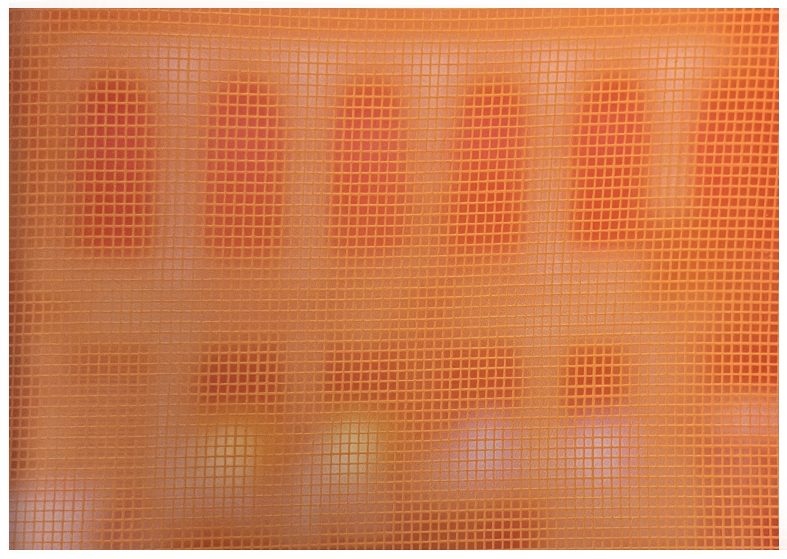핑크색 격자무늬
그것이 빛, 제스처, 또는 색?[1]이 사진에 대해 쓰려고 앉자마자 먼저 '빨간 막대사탕을 손에 쥔, 초록새, 회청색 후드를 입은 소녀'라고 썼다. 나는 분명 이사진을 찍을 때 빛이나 제스처 보다는 색을 염두에 두었을 것이다. 그것이 나의 고질적인 문제를 해결해 주었다. 당신은 이미 눈치챘겠지만 어떤 사진이 어떤 카테고리에 들어길지 정하는 것은 지극히 주관적이다.
나는 저 빛이 좋다.
그리고 나는 그 소녀의 제스처, 피부의 손가락, 후드와 그림자, 손을 들고 있는 모양과 약간 벌어진 입까지 모든 것이 멋지게 보였다. 하지만 이날의 주인공은 색이었다.
나는 사진을 찍고 잠시 동안 아주 희미한 강박장애와 함께 빛, 제스처, 색 중 대체 어떤 카테고리에 이사진을 넣을 것인가를 생각하면서 잠시 멈춰 있었다.
이상한 것은 당신이 하나를 얻고 나면 대체로 둘을 얻게 된다. 그리고 만약 행운이 따른다면 셋을 전부 얻게 되기도 한다. 나의 경우는 셋을 전부 얻은 적이 많지 않다.

빨간 마대사탕, 초록색 손톱, 그리고 회청색 후드를 입은 소녀
계속 함께 살아온 색들[1]이 사진은 고테말라와 국경을 접하고 있는 멕시코의 아름다운 도시 산 크리스토발 데 라스 카사스에서 찍은 것이다. 아버지와 아들의 인내의 제스처가 내게는 한쪽에서 다른쪽으로 색의 메아리가 치는 것처럼 보였다.
원래 빨간색과 초록색이었던 벽은 오랜 시간 동안 태양과 비, 더위와 추위에 시달려 그 색이 바랬다.
빨간색은 그다지 빨갛지가 않았고, 초록색도 별로 초록빛이 나지 않았다. 색은 오랜 시간을 함께 하면서 함께 지내는 법을 배우게 된다.
그들은 원래의 강렬함을 잃었지만 서로 더 미묘한 방식으로 어울리며 상호작용한다.

아빠와 아이, 멕시코
엉덩이를 가볍게![1]나는 종종 전에 찍었던 것을 다시 찍곤 한다. 그런데 어떨 때는 우연히 그들을 다시 마주쳐서 찍는 경우도 있다. 나는 일주일짜리 수업의 첫날인 월요일 점심식사 후에 수강생들을 밖으로 보내고 항상 집까지 혼자 걸어간다. 나는 항상 가장 빠른 길로 집까지 걸어가고 항상 이 벽을 지나고, 그리고 항상 옆에 서서, 옆으로 길게 따라서(그 반영이 더 도드라지도록)사진을 찍는다.
내가 앞의 문장에서 '항상'이라는 말을 좀 많이 썼다는 걸 느꼈지만, 그날은 내가 그 벽에 다다랐을 때 문득 어쩌면 다른 위치에서 바라보는 것도 좋을 것 같다는 생각이 들었다.
그래서 나는 길을 건너갔고, 정면으로 그 벽을 바라보며 사진을 찍었더니 아주 단순한 반영(덜 분명한)이 보였다. 그러나 덕분에 이전에는 쉽지 않았던 인물을 사진 속에 포함시킬 수 있었다.
실패에서만 배우는게 아니다. 성공에서도 역시 찾아내야 한다. 과거의 성공을 잘 보내주지 않으면 새로운 것을 보지 못할 수도 있다.

화강암 벽, 중국 소년
배우들이 등장할 것이다[1]나는 되도록 사진을 계획하지 않는 편이다. 그렇지만 아주 가끔 어떤 것은 머릿속에 각인시켜 두었다가 돌아가서 찍고 싶을 때가 있다.
나는 공사장 밖에 세워져 있는 이 멋진 오렌지색 가벽을 발견했다. 나는 게속 그곳으로 사진을 찍으러 가려고 하는데, 한두 가지가 자꾸 내앞은 막아섰다.
마음 한구석에 멋진 프랑스 사진작가 로베르 두아노Robert Doisneau의 말을 품고, 나느 마침내 그곳으로 갔다. "나는 무대를 찾았으나 배우들이 곧 등장할 것이다."
오렌지색 벽은 나의 무대였다. 그리고 나는 꽤 자주 그곳에서 사진을 찍었다. 아마 수백 장은 될 것이다. 휴대폰을 보며 걷는 아름다운 여자는 나를 의식하지 못하고 있었고 그건 또하나의 축복이었다.

여자와 오렌지색 벽
그 다음 날[1]내가 벽을 촬영하고 있을 때, 빛이 바뀌고 그림자가 드리웠다. 나는 사진의 오른쪽에서 그림자를 향해 걷고 있는 이 남자를 봤다.
나는 이 사진이 더 복잡해질 것이라고 예상했는데, 그 이유는 햇살이 비추는 곳은 조금 더 밝은 오렌지색으로, 그림자가 진 곳은 조금 더 어두운 오렌지색으로 바뀌었기 때문만은 아니었다.
그와 더불어 소화전, 경찰이 쳐놓은 바리케아드, 문 이음새의 경첩마저도 사진을 더 초현실적으로 만들어 주었다.
그 다음 날 이 가벽은 철거되었다.

오렌지색 벽2
눈가리개를 피하자[1]가능성을 열어두기 위한, 계획하지 않기 위한, 눈가리개를 쓰지 않기 위한 나의 엄청난 노력에도 불구하고 나는 종종 실패를 맛본다. 하필이면 이날 나는 뉴욕을 찍기 위한 계획을 세우고 뉴저지로 갔다. 나는 그렇게 사진을 찍은 적이 꽤 많았고, 그때마다 멋진 사진을 건졌다. 전과 다름 점이 있다면 계호기을 세웠다는 것이다.
해가 지면서 쏟아지는 황금빛 석양이 뉴욕의 창들로 비추는 아름다운 모습을 담아내고자 했다. 해 질녘의 황혼이 반사되는 모습, 정말 굉장했을 것이다!
음 ... 우리가 모두 에상할 수 있듯이 황금빛 태양은 없었다. 좌절된 시도에 화가 나고 실망에 빠진 한 사진작가만 남아 있었다. 심통나고, 불행한데다, 지칠대로 지친 나는 삼각대와 카메라 그리고 이런저런 잡다한 물건들을 차 안에 던져 넣기 시작했다. 차안을 엉망으로 만들고 있는 내 모습을 보던 친구가 한심하다는 듯 한마디 툭 내 뱄었다.
"뒤돌아 봐, 멍청아." 그말에 뒤를 돌아본 내눈에 피처럼 빨갛게 물든 하늘과 건물에 비친 붉은 잔광이 들어 왔다.
나는 놀라움을 금치 못했다.누가 보지 말라고 한 적이 있엇던가, 내 스스로 보지 않았던 것이다. 정작 눈앞에 있는 것을 무시했던 것이다. 이 모든 것이 '계획을 세웠기' 때문이고, 또 하나의 이유는 나의 인식과 시야를 제한하는 시각적, 감정적 눈가리개를 했기 때문이다.
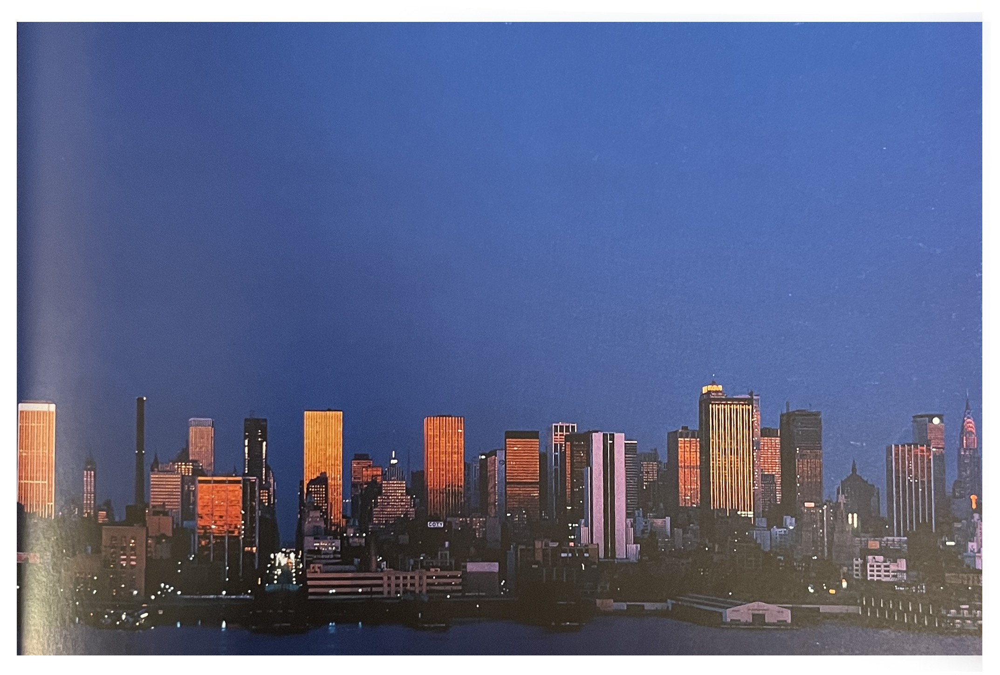붉은색과 푸른색의 뉴욕
아주 사소한 상식도 대단한 무기가 될 수 있다[1]그림에서는 선택한 어떤 색의 조합이나 진동을 가질 수가 있다. 물론 당신이 원하는 것을 그릴 것이고.
하지만 처음 발견했을 그 당시의 상태나 모양에 흥미를 느끼는 사진작가로서는 아주 드물게 노란색과 파란색의 진동을 볼 수 있다. 대체로 노란색은 너무 가볍고, 파란색은 너무 어둡다.
흥미롭게도, 같은 색상값에 있으며 색상환에서 서로 인접한 두 가지 색을 같이 놓으면 겹치는 부분의 선이 사라지고 하나가 다른 하나쪽으로 녹아 들어가는 것처럼 보인다.
"이런 것들을 사진에 어떻게 응용하나요?"라고들 묻는데 그에 대한 나의 대답은? 나도 모른다.
이런 요소들은 당신이 호기심을 가질 때만 그 가치가 있다. 말하자면 아는 것이 더 많을수록 당신에게 더 많은 가능성이 열려있다고할 수 있다.
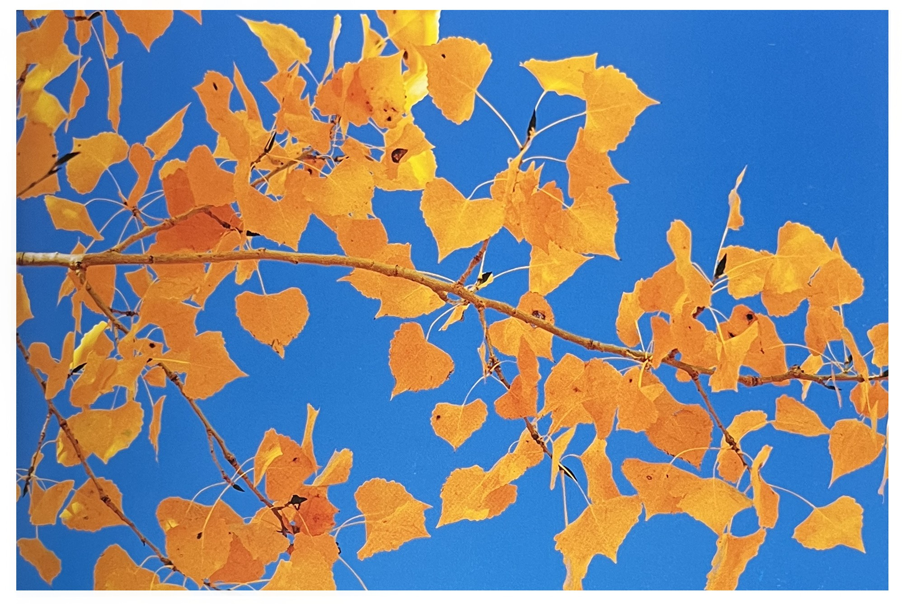노란색/파란색의 진동
항상 무엇인가는 일어나고 있다[1]아무 사진도 찍지 않고 돌아다니는 일은 내게 전혀 특별한 일이 아니다. 그리고 이날 오후에는 정말 아무것도 찍을 것을 찾지 못했다. 나는 저녁을 먹으러 가는 길이었다. 늦기도 했고, 더는 어떤 것을 찍을 계획이 없었으나 초록색 네모들이 나의 눈길을 사로잡았다.
굳이 말하자면 당신은 거의 항상, 심지어 사진을 찍겠다고 생각하지 않을 때도 늘 사진 찍는 일을 염두에 두고 있어야 한다. 그럴 때 가장 멋진 일들이 일어나니 말이다.
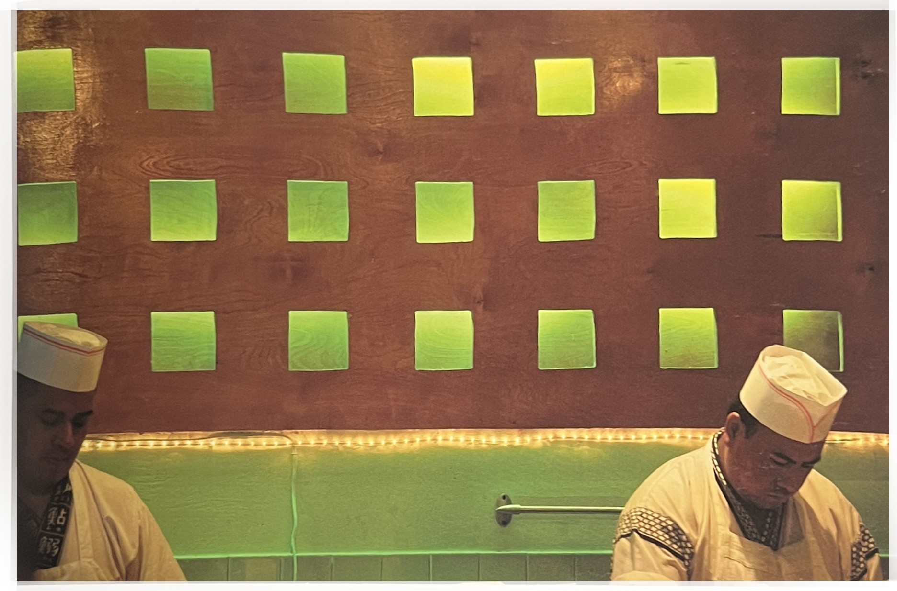초록색 네모들, 두 명의 요리사
당신은 다시 두번의 기회를 얻었다[1]저 벽은 우리 집에서 한 100미터 정도 떨어진 곳에 있다. 친구네 집에 가는 길에 있다는 이유로 나는 저 벽을 지난 20년간 찍어 왔다. 그 시간 동안 그 벽은 계속해서 변해왔다. 흰색 그래피티가 그려져 있기도 했고. 때로는 단색으로 칠해졌으며, 때로는 의미심장했고, 때로는 불경했다.
원래는 한 가지 순수한 색이었지만 지금은 여러겹의 페인트가 축적되어버린 이 뱍을 나는 꽤많이 찍어두었다. 나는 이사진을 찍고 그 자리를 뜨자마자 내가 잘못된 색상 밸런스를 사용했다는 것을 깨달았다. 나는 그 사진들을 전부 거부했고, 작품으로 선정하지도, 심지어 B컷으로도 선정하지 않았다. 왜냐하면 그것은 '잘못된' 색상 밸런스에서 찍힌 사진이기 때문이었다.
얼마의 시간이 지나고, 이 작품을 보다가 내가 이 사진에 아주 많이 이끌리고 있다는 것을 깨달았다. 저 남자도, 개들도, 그리고 저 색까지도 사랑스러웠다. 실제로 보았던 색보다 오히려 사진 속 색이 더 좋을 정도였다.
당신이 사진을 찍는다는 것은 어떤 명제를 만들어 낼 첫 번째 기회다.
그리고 사진을 보정할 때, 당신만의 명제를 만들어 낼 두 번째 기회를 갖는다. 그것은 당신의 첫 번째 선택에 대한 지지가 될 수도 있고 또 다른 방향으로 가는 전환점이 될 수도 있다.
언제나 마음을 열어 두도록 하자. 당신 자신과 당신의 사진에 대해서 어떤 새로운 것을 배우게 될지도 모른다.

벽
문제점=해결책[1]에른스트 하스는 언젠가 이렇게 말했다. "반영을 잘 이용하면 너는 너무 쉽게 천재가 되는 거야." 그가 옳았다. 반영은 쉽다. 특히 뉴욕에서는 더더욱 식은 죽 먹기다.
이 장면을 봤을 때 나는 무슨 일이 일어나고 있는지 알아내는데 한참이 걸렸다. 그것은 동네에서 영화를 찍는데 쓰이는 현지 촬영 트럭이었고, 이는 내게 도전과 기쁨을 줄 만큼 충분히 난해해 보였다.
사진을 많이 찍다보면 당신이 사진을 찍을 때 추구하는 방식에 특정한 무언가가 있다는 점을 발견하게 될 것이다. 나는 트럭의 장비가 나오지 않는, 오로지 순수하게 반사되는 면만을 사진에 담고 싶었다.
트럭의 장비들이 사진에 나오는 것이 문제가 아니라, 오히려 더 풍성한 사진을 만들어 준다는 걸 깨닫는 데는 꽤 오랜 시간이 걸렸다.
다시 말하지만, 문제점이 곧 해결책이 될 수 있다.
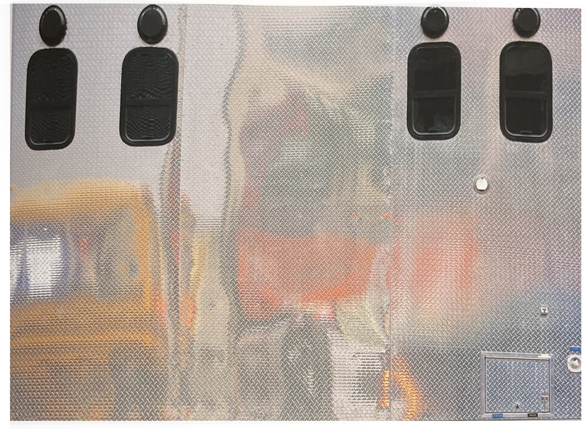반영들
계획세우기를 그만둘 것[1] 나는 사실 광장한 강박과 결벽, 특히 일에 있어서 깔끔한 마무리를 추구한다. 그러나 정작 내 눈에는 디테일을 모호하게 만드는 것이나 순수한 색을 보게하는 것들이 눈에 들어온다. 이 장면은 뉴욕의 리틀 이탈리아에서 열린 산 제나로 축제 때 야외 식당에 씌워놓은 비닐 커버다. 나는 지금까지도 그 비닐을 '느낄 수'가 있다. 다시 말하지만, 마음을 열고 보지 않은면 그것이 마치 당신의 '계획들'을 망치는 것처럼 보일 수도 있다. 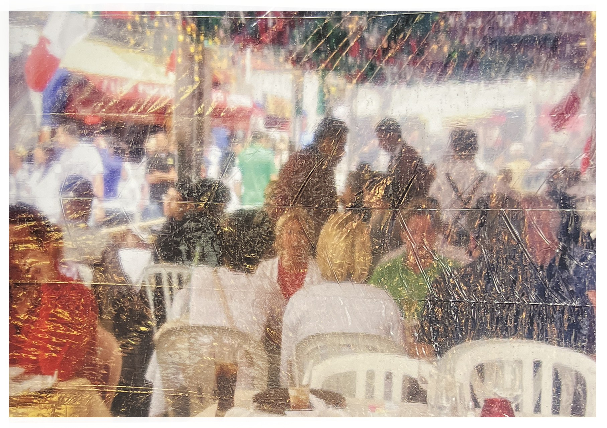비닐
무의미한 다섯 시간[1]저 당시는 다섯 시산을 비행기에 앉아 있고도 정말 단 한 장의 원하는 이미지도 찾지 못했던 흔치 않은 경험을 한 직후였다.
아무 생각없이 짐을 찾으려 가는 길에 이 사진을 얻게 되었다.
이미지는 당신이 기대하는 장소뿐 아니라 어디든 있다는 사실을 인식하는 것이 중요하다.
어떤 일이 일어났을 때만 반짝 눈을 떠서는 안 된다. 늘 열려있어야 한다. 그러면 그때, 무엇이든 사진 찍는 일이 생기기 마련이다.

수화물 찾는 곳
뭔가 새로운 것[1]태양이 뉘엿뉘엿 넘어가고, 그 빛은 믿을 수 없이 황홀해 보였다. 예상대로 빛은 놀랍도록 좋았지만, 그 빛은 딱히 어떤 것을 강조하거나 바꿔놓고 있지는 않았다. 그렇게 내가 멍하니 기다리고 있는데 사진 속 여자가 갑자기 나타나서 택시를 잡으로 하기 시작했다.
한참 택시가 보이지 않다가 마침내 한 대가 그녀 앞에 멈춰섰다. 그녀는 문쪽으로 걸어 갔고 나는 정말 깜짝놀랐다. 어떻게 빛이 이 빽빽한 도시를 관통해서 이렇게 낮은 곳까지 왔으며, 6번 도로와 허드슨 강 사이에 있는 모든 건물을 깔끔하게 정리하고, 그녀의 빨간 구두와 타이어의 가장 아래까지 비출 수 있을 정도로 낮게 내려욌을까? 게다가 운좋게도 나는 배경에 길을 건너고 있는 커플을 담을 수 있었다. 그리고 또 하나의 행운은 배경에 있던 자동차가 브레이크를 밟으면서 그 등이 사진 속 여자의 신발과 함께 멋진 포인트로 작용할 수 있었다는 점이다.
이 사진을 찍고 나는 기쁨에 한껏 상기되어 있었지만 그 이유는 잘 알지 못했다. 나중에야 알게 된 것이지만 그 사진에의 빛과 색의 배치는 그전에는 본적이 없는 것이었고 볼수록 더 멋스럽게 느껴졌다.
사진이 가져다 주는 돈과 명예는 달콤하다. 하지만 새롭고 신선한 것을 보는 즐거움과 비교하면 그것은 아무것도 아니다.

여자, 구두, 택시
흑과 백 그리고 색[1]나는 터미널에서 사진 찍는 것을 좋아해서 가끔 비행기로 이동해야 할 때 발생하는 항공기 연착을 전혀 문제 삼지 않는다. 그날도 역시 일고여덟 명의 사람들이 각자의 컴퓨터로 동영상을 보고 있는 모습을 사진에 담았다.
다른 몇몇 무리들도 찍은 뒤, 어깨 너머로 우연히 신문을 읽고 있는 이 남자를 보게 되었다.
나는 되도록 은밀하지 않게 하려, 항상 즐겁게, 웃는 얼굴로, 겁주지 않는 몸짓과 행동을 취하려 노력한다.ㅍ
예루살렘에서 올 컬러 책을 출간한 적이 있는데, 편집자는 내가 극단적 정통파 유대교처럼 흑백으로 사진찍기를 원했다. "그들이 모두 검은색과 흔색 옷을 입기 때문이에요"하고 그는 말했었다. 그러나 나는 이 한 면만은 반드시 컬러로 해야 한다고 외쳤다. 하지만 나는 지고 말았다.
내가 이 사진을 정말 좋아하는 이유는 그 남자의 피부색을 제외하면 모든 것들이 흑백으로 되어 있기 때문이다. 왜인지는 모르겠지만 그 점이 나를 만족시켰다 그것은 그저 뒷통수와 신문일 수도 있지만. 특이한 흑백과 유색의 조화로서 나를 매료시켰다.

뒤통수
정해진 룰은 없다[1]영화'보이스 타운'Boys Town에서 스펜스 트레이시Spencer Tracy가 완벽히 재현한 플래너건Edward Jpseph Flanagan신부는 '나쁜 아이'라는 것은 없다고 믿었다. 단정 지을 수는 없지만 나 역시 나쁜 색이라는 것은 없다고 말한다. 그것은 순전히 주관적인 것이며, 내용 또는 다른 색과의 관계와 연관되는 것이다.
이 사진에는 '잘못된' 부분이 너무 많다.
옅은 초록색으로 뒤덮여 있고, 상像은 대비가 너무 흐릿하다. 게다가 디테일에는 명료함이 거의 없다. 색이 전체 배경의 질을 좌지우지할 정도로 매우 압도적이다. 이렇다 할 포인트나 절정, 내용 같은 것이 아무것도 없다.
이것은 정말 어려운 사진이라 할 수 있다. 당신은 여기에서 그 세세한 디테일을 찾아야 한다. 또 이것은 몹쓸 녹색필터를 통해 찍힌 사진처럼 보인다.
그러나 나는 이 사진이 좋다.

초록색 반영
기이한 일출[1]이 사진은 내가 아끼는 사진 중 하나다. 이 장면을 봤을 때, 내 눈은 아마도 튀어나올 듯 크게 뜬채로 전에 한번도 본적 없는 광경에 넋을 놓고 멍청하게 쳐다보고 있었을 것이다.
모두에게 아주 보기 드문 광경이라고 말할 수는 없겠지만, 적어도 나는 이런 장면을 본 적이 없다. 아마 이것이 나를 깨우는 스위치, 즉 중요한 전환점이 된 것인지도 모른다.
이러한 순간은 당신이 사진을 찍었든 찍지 않았든 결코 쉽게 잊을 수 없는, 쉽게 찾아오지 않는 순간이다.
운 좋게도, 나는 이 장면을 사진에 담을 수 있었다. 당연히 "내가 사진기를 깜짝했지 뭐야, 이 장면이 어땠는지 내가 묘사해줄게" 라고 말하는 것보다 사진을 보여주는 것이 훨씬 좋지 않겠는가.
자 이게 마지막 사진이다.
지금까지 봐줘서 고맙다.
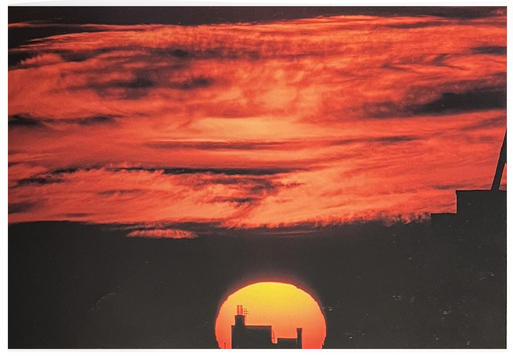뱅크 뷰
** 제이 마이젤Jay Maisel
1931년 뉴욕 브루클린에서 때어난 사진작가 제이 마이젤의 경력은 어느덧 61년이다.
그는 에이브러햄 링컨 고등학교에서 리언 프랜드에게 그래픽 디자인을 배웠고,
1949년과 1953년 각각 조셉 허시Joseph Hirsch,
요제프 알베르스Josef Albers와 함께 회화를 공부했다.
1952년에는 사진작가이자 그래픽 디자이너인 허버트 매터Herbert Matter,
1955년에는 사진작가이면서 디자이너인 알렉세이 브로드비치Alexey Brodovich
의 강의를 들었다. 그리고 1954년에 본격적인 프리랜서 사진작가로서의 활동을 시작했다.
제이의 이름이 강렬하고 활기찬 사진의 대명사로 자리한 것은, 수많은 광고나 사설,
기업홍보를 위해 사용된 그의 인상깊은 이미지들의 빛과 제스처에서 비롯한다.
그에 더해, 그의 사진은 책이나 개인 또는 기업, 그리고 미술관 컬레션에 그모습을 내비친다.
다섯 권의 '스포츠일러스트레이티드'의 '스윔수트 이슈'Swimsuit Issue
표지 사진, '뉴욕 매거진'의 처음 두 번의 표지사진, 그리고 마일즈 데이비스Miles Davis의
'Kind of Blue' 앨범 재키사진 등이 대표적인 그의 광고작업이다.
또한 그의 수많은 수상내역 중에서도 특히 손꼽히는 것은
아트 디렉티스 클럽Art Directors Club의 명예의 전당,
미국 미디어 사진가 협회에서 수여하는 올해의 사진가 상,
그리고 국제사진센터의 인피니티 어워드 등이다.
1990년대 후반 광고작업을 중단한 후로 제이는 자신의 개인적인 작품세계에
더욱 집중할 수 있었다. 쿠퍼 유니온과 예일대를 졸업하고 전 세계를 돌며
젊은 사진작가들을 대상으로 하는 워크숍, 세미나, 강연 등으로 그의 교육 연보를
이어가고 있다.
[참고문헌]
[1]빛, 제스처, 그리고 색light, gesture & color, 제이 마이젤 지음, 박윤혜 옮김, 시그마북스, 2015.3.2
....
....
....
....
....